🧭 Cockpit Projet
le manuel pas à pas
Piloter un projet de A à Z au même endroit : planning, risques, copils, comptes rendus, décisions, actions, livrables, budget et retex.
Démarrer l'appli
Cockpit Projet tourne sur votre ordinateur, dans votre navigateur (Chrome, Edge, Safari ou Firefox). Rien n'est envoyé sur Internet.
Lancer Cockpit Projet
- Dans le Finder, ouvrez le dossier Cockpit_Projet.
- Double-cliquez sur Lancer Cockpit Projet.command. Une fenêtre Terminal s'ouvre, puis votre navigateur affiche l'appli à l'adresse
http://localhost:8765. - Laissez la fenêtre Terminal ouverte tant que vous utilisez l'appli. Pour arrêter : fermez cette fenêtre.
http://localhost:8765 à vos favoris. Si la page affiche une erreur, c'est que la fenêtre Terminal (ou la fenêtre noire sous Windows) a été fermée : relancez simplement Lancer Cockpit Projet.http://localhost:8765 dans Safari.Première fois : choisir le dossier de vos données
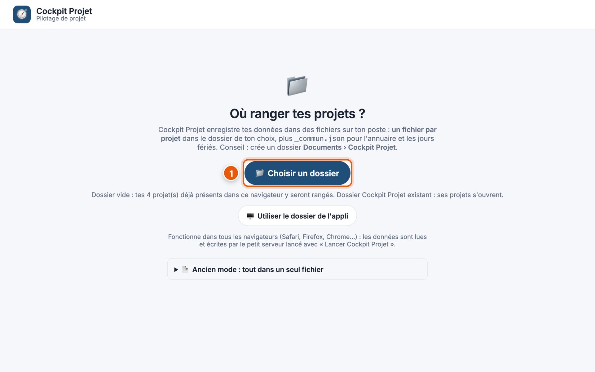
- 1Cliquez sur 📁 Choisir un dossier, puis sélectionnez (ou créez) un dossier, par exemple Documents › Cockpit Projet. Chrome demande votre accord pour y écrire : acceptez.
Dans ce dossier, l'appli range :
| Fichier / dossier | Contenu |
|---|---|
DEMO - Portail RH en ligne.json | Un fichier par projet (code + nom du projet). |
_commun.json | Ce qui est partagé par tous vos projets : l'annuaire des personnes, les jours fériés et fermetures, le thème, les tuiles de la vue d'ensemble et vos templates. |
documents/ | Les fichiers joints aux livrables, vos captures d'écran (documents/captures/) et vos templates (documents/templates/). |
corbeille/ | Les projets supprimés : rien n'est perdu définitivement. |
Quand l'appli est mise à jour
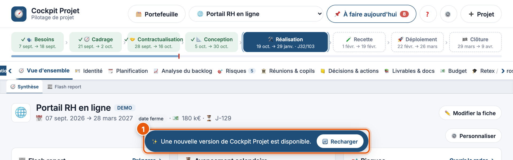
- 1Ce bandeau apparaît en bas de l'écran quand une nouvelle version est disponible. Cliquez sur 🔄 Recharger : vos données ne bougent pas.
Le portefeuille de projets
C'est la page d'accueil : tous vos projets d'un coup d'œil. On y revient à tout moment en cliquant sur le logo 🧭 ou sur « Portefeuille ».
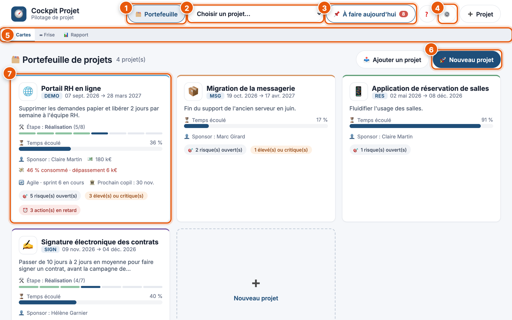
- 1Portefeuille : revient à cette page d'accueil (le logo 🧭 fait pareil).
- 2Choisir un projet : passe directement d'un projet à l'autre.
- 3À faire aujourd'hui : vos tâches du jour, tous projets confondus. Le badge rouge indique combien (voir chapitre 15).
- 4⚙️ Réglages : dossier de données, annuaire, jours fériés, partage et suppression de projets (voir chapitre 16).
- 5Les sous-onglets du portefeuille : ▦ Cartes, ▬ Frise et 📊 Rapport.
- 6Nouveau projet : lance l'assistant de création. « Ajouter un projet » sert à ouvrir un fichier de projet reçu d'un collègue.
- 7Une carte projet : étape en cours, temps écoulé, sponsor, budget, sprint en cours, prochain copil, risques et actions en retard. Cliquez dessus pour ouvrir le projet.
La frise du portefeuille
Dans le sous-onglet ▬ Frise, vos projets s'alignent sur une même ligne de temps, avec leurs jalons et leurs copils. Pratique pour repérer les périodes chargées.
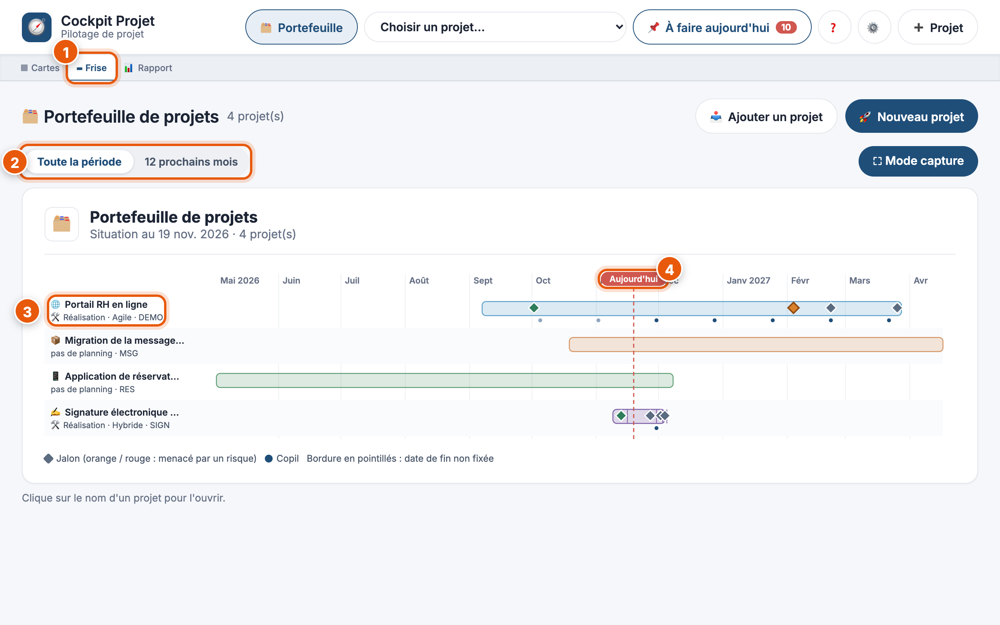
- 1Le sous-onglet ▬ Frise.
- 2Toute la période, ou les 12 prochains mois.
- 3Une ligne par projet : son étape et sa méthode, sa barre de dates découpée en phases, ses jalons ◆ et ses copils ●. Cliquez sur le nom pour ouvrir le projet.
- 4La ligne Aujourd'hui.
Le rapport de portefeuille (pour la direction)
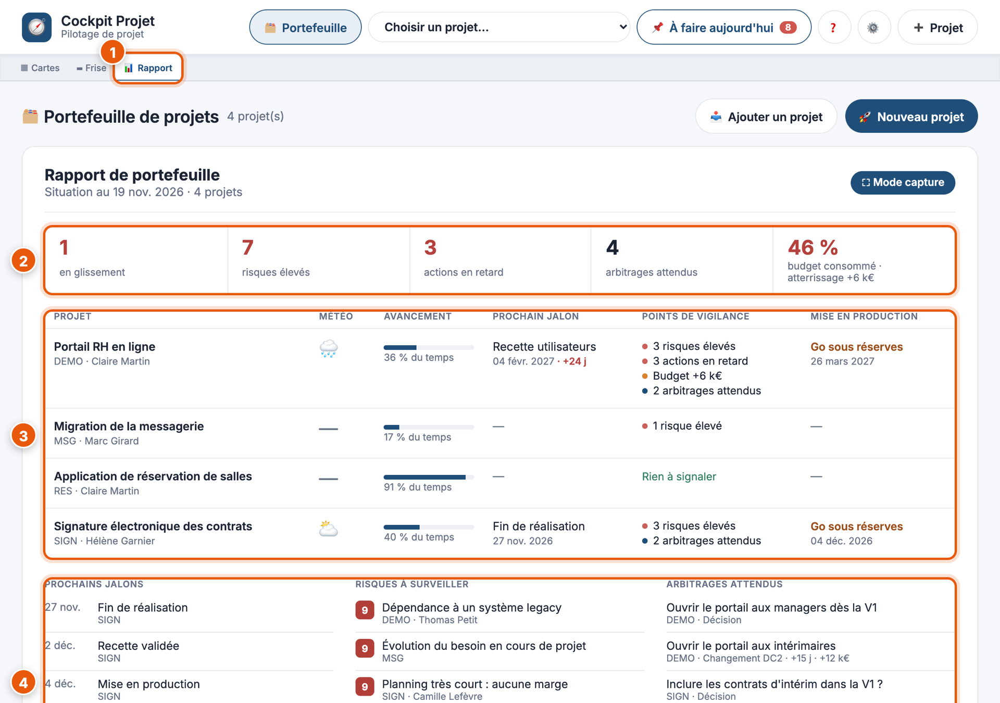
- 1📊 Rapport : la synthèse de tous vos projets sur une page.
- 2Les chiffres clés : projets en glissement, risques élevés, actions en retard, arbitrages attendus, budget consolidé. Un chiffre en rouge demande votre attention.
- 3Une ligne par projet : dernière météo, avancement, prochain jalon (et son glissement), points de vigilance résumés en quelques mots, et état de la mise en production. Cliquez sur une ligne pour ouvrir le projet.
- 4Les prochains jalons (3 mois), les risques à surveiller et les arbitrages attendus de tous les projets.
Avec ⛶ Mode capture, faites-en une capture pour votre comité de direction.
Créer un projet
Un assistant en 3 étapes. Seul le nom est obligatoire : vous compléterez le reste plus tard.
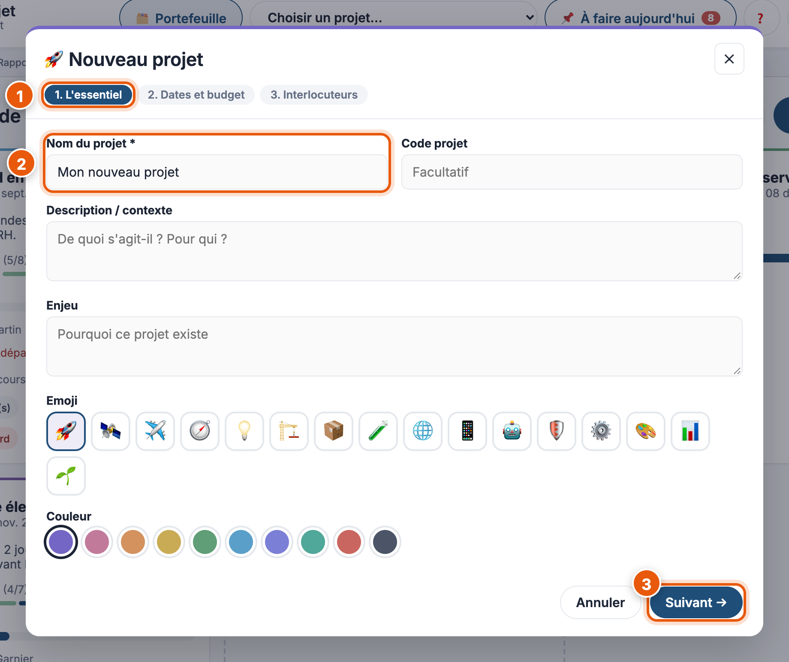
- 1Les 3 étapes : l'essentiel, puis dates et budget, puis interlocuteurs.
- 2Le nom du projet (obligatoire). Le code projet (ex. PRH) est facultatif mais pratique : il apparaît partout et dans le nom du fichier.
- 3Suivant → pour passer à l'étape suivante. À la fin, le projet s'ouvre.
- L'essentiel : nom, code, description, enjeu, emoji et couleur (pour reconnaître le projet d'un coup d'œil).
- Dates et budget : date de début (indispensable pour le planning), date de fin si elle est connue, budget, et les modules optionnels (suivi du budget, charge des personnes).
- Interlocuteurs : choisissez les personnes dans l'annuaire commun et donnez-leur un rôle (Sponsor, Chef de projet, Product Owner…). Une personne saisie une fois est réutilisable dans tous vos projets.
Vue d'ensemble & flash report
La page d'accueil d'un projet : l'essentiel sur une seule page, et un flash report hebdomadaire prêt à envoyer.
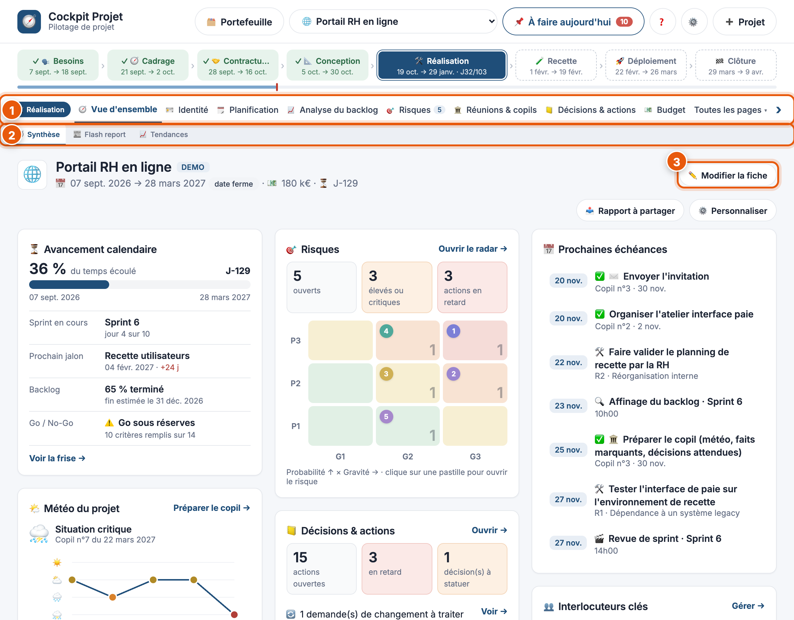
- 1Les onglets du projet, sur une seule ligne. Ils sont présentés un par un dans la suite de ce manuel.
- 2Les sous-onglets de l'onglet ouvert, sur la bande teintée juste en dessous. Ici : Synthèse, Flash report et Tendances.
- 3Modifier la fiche : ouvre la fiche d'identité du projet.
La synthèse rassemble l'avancement calendaire, le sprint en cours, le prochain jalon, les risques (mini-matrice), les prochaines échéances, la météo, les décisions & actions et les interlocuteurs clés. Chaque bloc a un lien Ouvrir → vers l'onglet détaillé.
Choisir les tuiles de la vue d'ensemble
La vue d'ensemble se compose de tuiles. Six sont affichées au départ, sur trois colonnes ; vous pouvez en ajouter, en retirer et les déplacer où vous voulez.
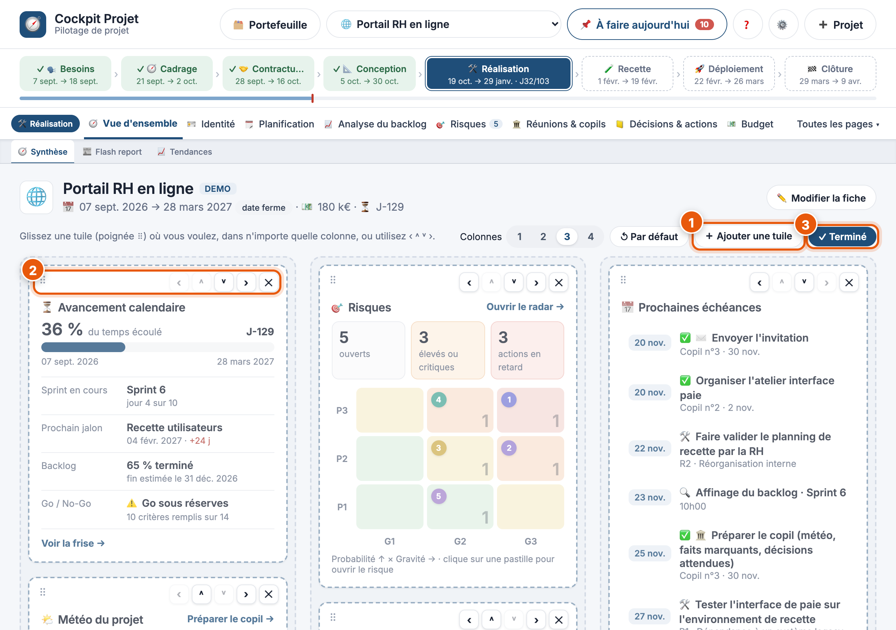
- 1Après un clic sur ⚙️ Personnaliser (en haut à droite des tuiles) : ＋ Ajouter une tuile ouvre le catalogue. « ↺ Par défaut » revient aux six tuiles de départ, sur trois colonnes.
- 2Les tuiles sont rangées en colonnes (1 à 4, au choix avec « Colonnes »). Glissez une tuile par sa poignée ⠿ : elle se place en direct dans la colonne survolée, en haut, au milieu ou tout en bas, même dans une colonne vide ; les autres se décalent en douceur. Ou utilisez ‹ › (colonne de gauche / de droite) et ˄ ˅ (monter / descendre). ✕ la retire.
- 3✓ Terminé quitte le mode personnalisation.
- 4＋ Ajouter une tuile, aussi en bas de la page.
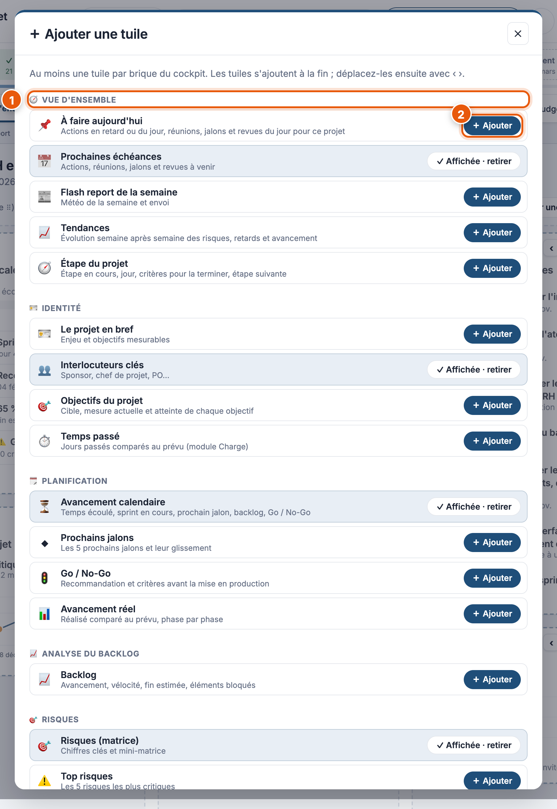
- 1Les tuiles sont rangées par brique du cockpit : il y en a au moins une par brique (27 en tout).
- 2＋ Ajouter la place en bas de la colonne la plus courte ; déplacez-la ensuite où vous voulez. Une tuile déjà affichée peut aussi être retirée d'ici.
| Brique | Tuiles disponibles |
|---|---|
| Vue d'ensemble | À faire aujourd'hui (pour ce projet, actions à cocher) · Prochaines échéances · Flash report de la semaine · Étape du projet · Tendances |
| Identité | Le projet en bref (enjeu, objectifs) · Interlocuteurs clés · Objectifs du projet (cible, mesure, atteinte) · Temps passé (module Charge) |
| Planification | Avancement calendaire · Prochains jalons · Go / No-Go · Avancement réel |
| Analyse du backlog | Backlog (avancement, vélocité, fin estimée) |
| Risques | Risques (matrice) · Top risques · Problèmes |
| Réunions & copils | Réunions & comptes rendus · Prochain copil (préparation) · Météo du projet · Réunions à préparer (15 prochains jours : à préparer, en préparation, prêtes) |
| Décisions & actions | Décisions & actions · Actions en retard (à cocher) · Demandes de changement |
| Livrables & docs | Livrables & docs |
| Budget | Budget (si le module est activé) |
| Retex | Retex |
Le flash report de la semaine
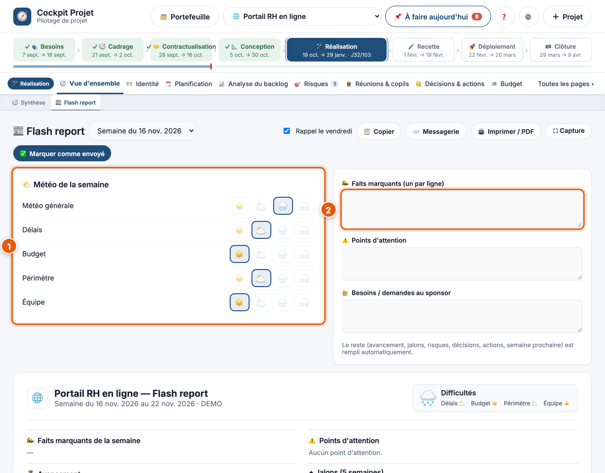
- 1La météo de la semaine : un clic sur une icône par axe (générale, délais, budget, périmètre, équipe).
- 2Faits marquants (un par ligne), puis points d'attention et besoins vis-à-vis du sponsor.
- Remplissez la météo et les trois zones de texte. Le reste se remplit tout seul : jalons, risques, actions, décisions de la semaine.
- Envoyez-le : 📋 Copier (à coller dans un mail ou Teams), ✉️ Messagerie (ouvre un nouveau mail, rien n'est envoyé sans vous) ou 🖨️ Imprimer.
- Cliquez sur Marquer comme envoyé. Avec l'option Rappel le vendredi, l'envoi apparaît dans « À faire aujourd'hui » chaque vendredi.
Les tendances, semaine après semaine
Le sous-onglet 📈 Tendances montre l'évolution des indicateurs du projet : météo, avancement réel, temps écoulé, backlog, risques ouverts et critiques, problèmes, actions en retard, glissement des jalons, budget consommé.
- Rien à saisir : l'appli prend une photo par semaine, automatiquement, dès que vous ouvrez le projet. La photo de la semaine en cours se met à jour jusqu'au dimanche.
- Chaque carte affiche une petite courbe : vert si ça s'améliore par rapport à la semaine précédente, rouge si ça se dégrade.
- ⛶ Mode capture pour mettre les tendances dans votre support de copil. Une tuile Tendances existe aussi pour la vue d'ensemble (⚙️ Personnaliser).
Le rapport à partager
Sur la vue d'ensemble, 📤 Rapport à partager crée un fichier HTML en lecture seule : il s'ouvre dans n'importe quel navigateur, sans l'appli. Idéal pour le sponsor ou l'équipe (pièce jointe, Teams, SharePoint).
- Cochez les parties à inclure : fiche et étapes, planning, tendances, risques, problèmes, décisions, actions ouvertes, livrables, Go / No-Go.
- Créer le rapport : le fichier se télécharge (« Rapport - code - date.html »).
Identité, étapes, matrice RACI & charge
La carte d'identité du projet et l'organisation de l'équipe : qui fait quoi, et combien de jours.
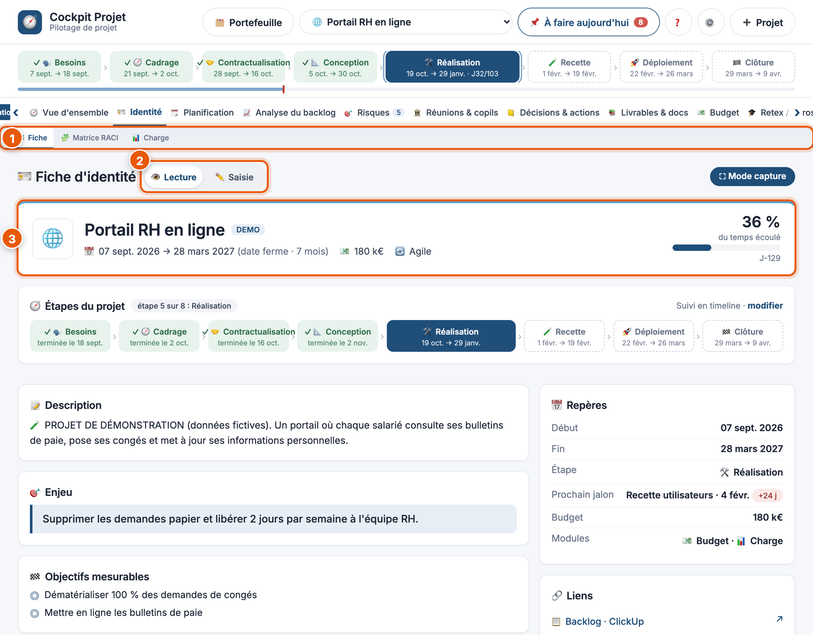
- 1Trois sous-onglets : Fiche, Matrice RACI et Charge (si le module est activé).
- 2Deux modes : 👁️ Lecture pour consulter (c'est le mode par défaut), ✏️ Saisie pour modifier.
- 3En lecture, l'essentiel en un coup d'œil : dates, durée, budget, méthode et temps écoulé.
- 4Le contenu est mis en forme : enjeu en citation, objectifs et périmètre (inclus / exclu) en listes, interlocuteurs en cartes avec leur e-mail cliquable. Un champ vide affiche « Non renseigné · compléter ».
Le mode Lecture est idéal pour présenter le projet (bouton ⛶ Mode capture pour une capture propre). Pour modifier, cliquez sur ✏️ Saisie, ou sur ✏️ Modifier la fiche depuis la vue d'ensemble.
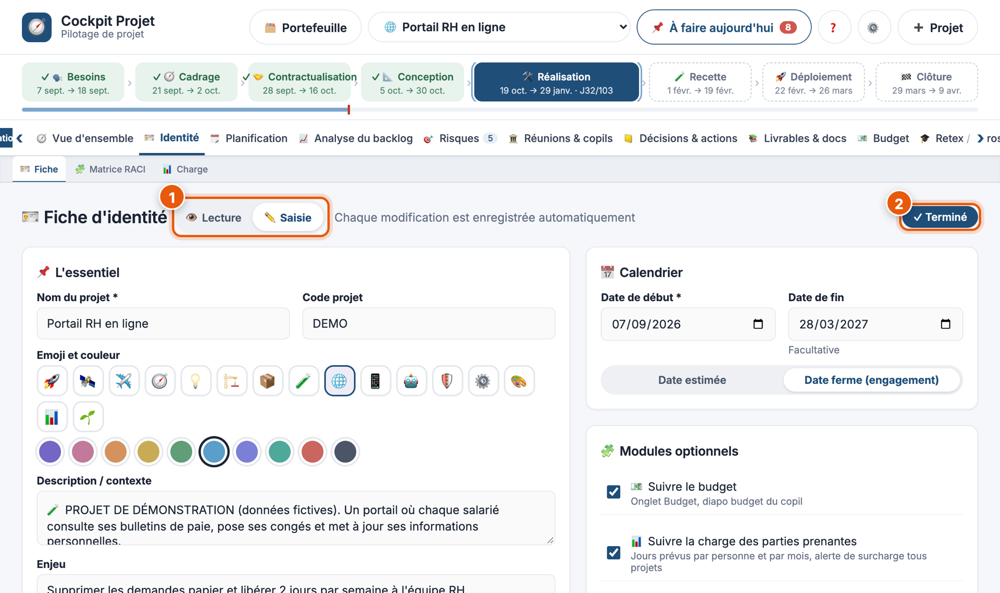
- 1En mode Saisie, tout se modifie directement et s'enregistre tout seul : nom, dates, description, enjeu, objectifs, périmètre, budget, interlocuteurs, notes, lien vers le backlog (Jira, ClickUp…). C'est aussi ici qu'on active les modules optionnels (suivi du budget, charge des personnes) et qu'on choisit les étapes du projet et la navigation (libre ou en timeline).
- 2✓ Terminé revient en lecture.
La matrice RACI
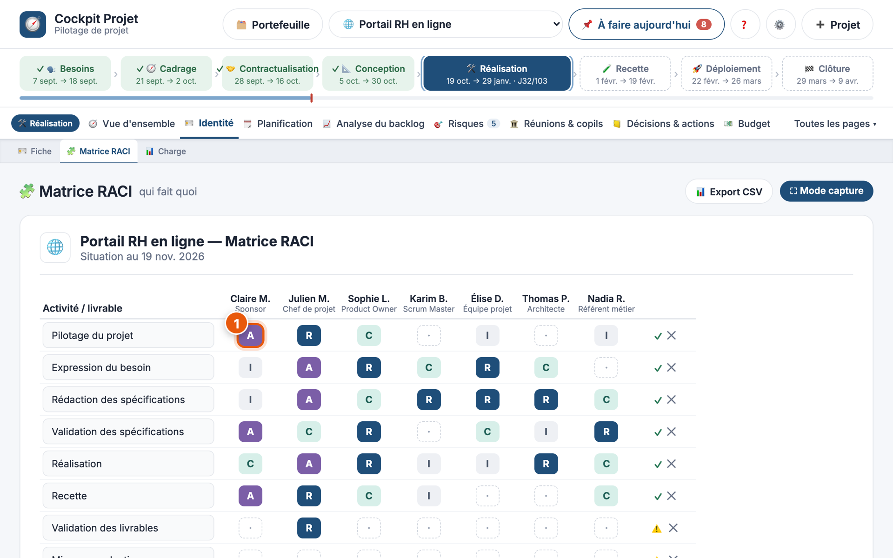
- 1Cliquez sur une case pour faire défiler R (réalise), A (approuve), C (consulté), I (informé), puis vide.
- Ajoutez vos activités, ou cliquez sur Proposer des activités pour partir d'une liste type.
- Remplissez les cases. Une coche ✓ en bout de ligne confirme qu'il y a un seul A et au moins un R ; sinon un ⚠ vous prévient.
- Exportez en CSV ou passez en ⛶ Mode capture pour une capture d'écran propre.
La charge des parties prenantes
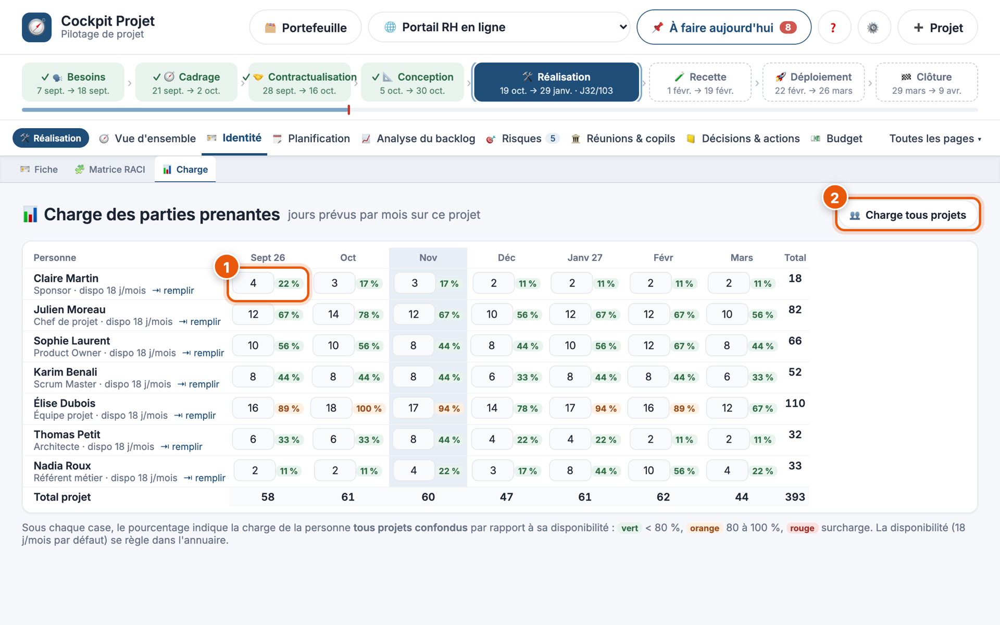
- 1Saisissez les jours prévus par personne et par mois. Sous la case, le pourcentage indique sa charge tous projets confondus : vert sous 80 %, orange de 80 à 100 %, rouge au-delà.
- 2Charge tous projets : la vue globale, pour repérer les personnes surchargées.
Les étapes du projet et le suivi en timeline
Un projet suit de grandes étapes : recueil des besoins, cadrage, réalisation, clôture… En mode suivi en timeline, un bandeau en haut de chaque page montre où vous en êtes, et les onglets se limitent aux pages utiles pour l'étape.
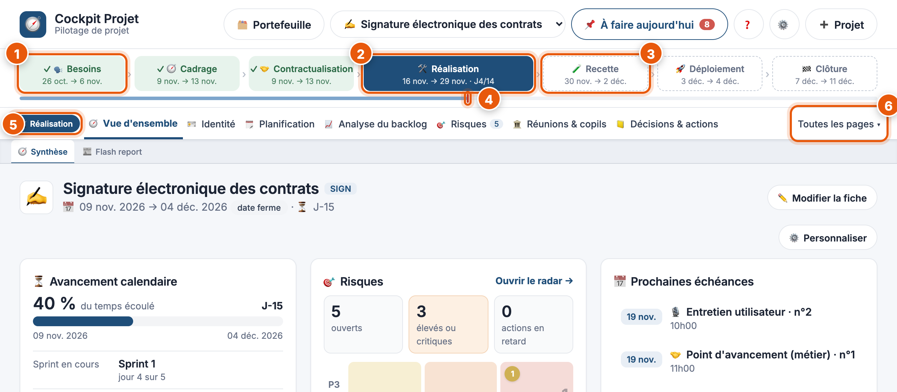
- 1Étape terminée (✓ vert).
- 2Étape en cours (bleu foncé), avec son jour : « J4/14 ». En retard, un ⏰ indique le dépassement.
- 3Étape à venir (pointillés).
- 4La barre du temps et le trait rouge aujourd'hui : pour vous situer dans le temps.
- 5L'étape dont les onglets montrent les pages.
- 6Toutes les pages ▾ : rouvre tous les onglets, à tout moment.
Cliquez sur une étape (passée, en cours ou à venir) : les onglets s'adaptent et un panneau s'ouvre.
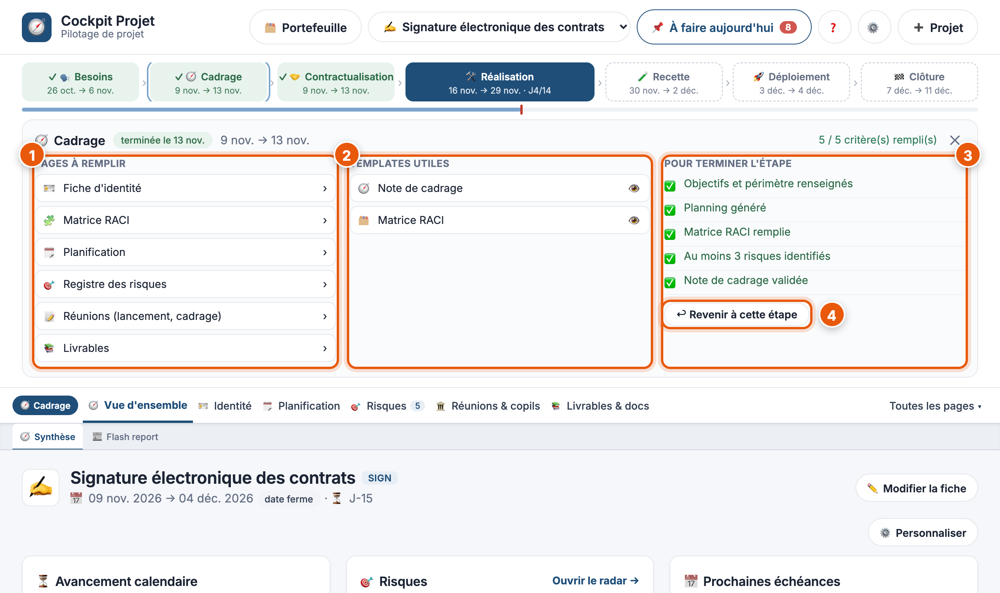
- 1Pages à remplir : un clic vous y emmène.
- 2Templates utiles pour l'étape (aperçu, Word, ajout aux livrables).
- 3Pour terminer l'étape : les critères se cochent tout seuls d'après les données du projet (planning généré, RACI rempli, note de cadrage validée…).
- 4Sur l'étape en cours : Passer à l'étape suivante. S'il manque des critères, l'appli vous le signale mais ne vous bloque pas. Sur une autre étape : Revenir à cette étape ou en faire l'étape en cours.
Le choix du mode et des étapes se fait dans la fiche d'identité, en mode ✏️ Saisie :
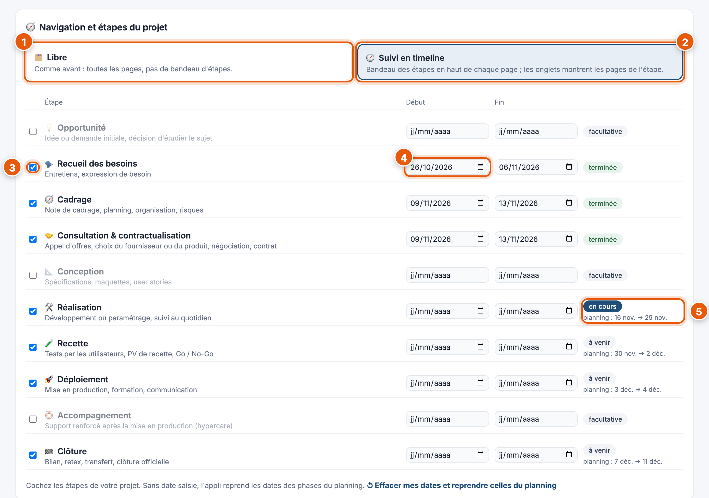
- 1Libre : toutes les pages sont accessibles, sans bandeau d'étapes.
- 2Suivi en timeline : le mode par défaut des nouveaux projets.
- 3Cochez les étapes de votre projet. Facultatives : Opportunité, Consultation & contractualisation (fournisseur, achat d'un produit), Conception, Accompagnement (après la mise en production).
- 4Les dates : laissées vides, elles sont reprises des phases du planning ; saisies, elles priment.
- 5L'état de chaque étape, et les dates proposées par le planning.
Le temps réellement passé
Dans Identité › Charge, le bouton ⏱️ Temps passé bascule le tableau : vous saisissez les jours réellement passés par personne et par mois. Sous chaque case, l'appli rappelle le prévu et l'écart : rouge si la personne a passé plus de temps que prévu. 📅 Prévu revient à la charge prévue.
Planification
L'appli construit le planning à partir de la méthode choisie (sprints, phases, jalons, réunions, copils). Vous ajustez ensuite ce que vous voulez.
Mettre en place le planning (une seule fois)
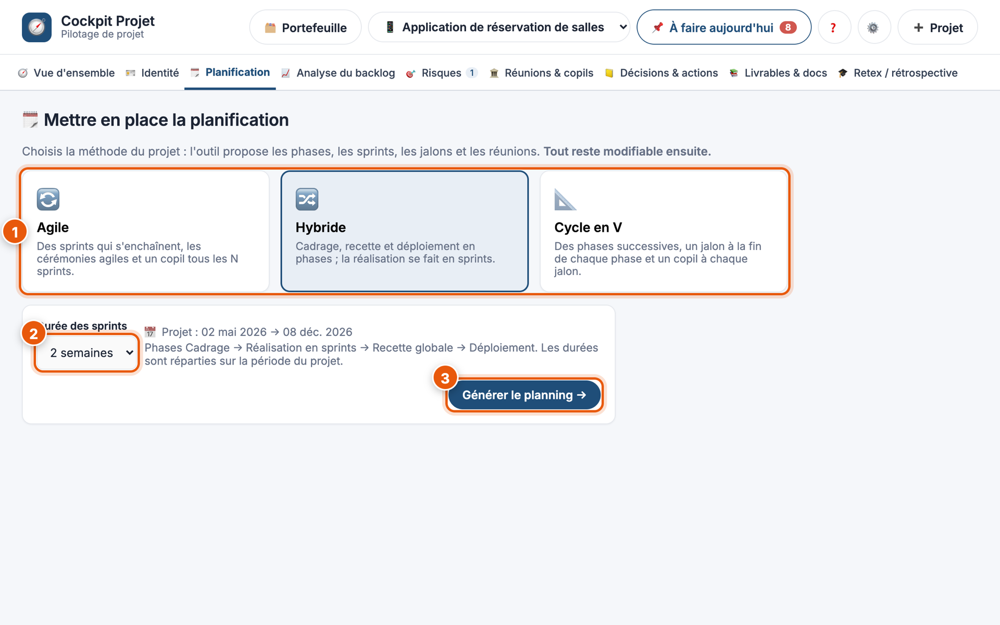
- 1Choisissez la méthode : Agile (sprints), Hybride (cadrage, sprints, recette, déploiement) ou Cycle en V (phases successives).
- 2La durée des sprints (1 à 4 semaines). Les sprints commencent toujours un lundi.
- 3Générer le planning → : phases, sprints, jalons, cérémonies et copils sont créés d'un coup.
Dans Planification › Réunions, la liste « Types de réunions générées » permet de cocher ou décocher chaque type. En plus des cérémonies et des copils :
| Type | Quand | Ordre du jour proposé |
|---|---|---|
| 🧭 Réunion de cadrage | Le premier jour du projet, l'après-midi (après la réunion de lancement) | Contexte et enjeux, objectifs, périmètre, parties prenantes, contraintes et risques, planning macro, prochaines étapes |
| 🎙️ Entretien utilisateur | Un par semaine dès le début ; nombre réglable (3 par défaut) | Guide d'entretien : introduction (accord pour l'enregistrement, confidentialité), dernière utilisation, freins, questions métier, approfondissement, « baguette magique », conclusion |
| 🤝 Point d'avancement (métier) | Toutes les 2 semaines, le jeudi ; fréquence et jour réglables | Avancement, démonstration, retours du métier, points ouverts, décisions, prochaines étapes |
La frise du planning
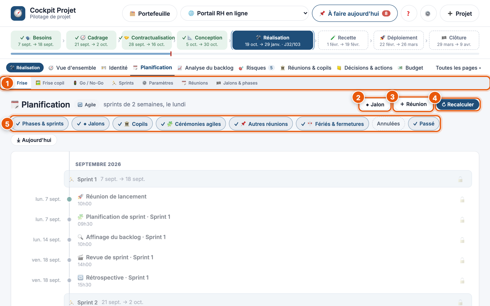
- 1Les vues : Frise, Frise copil, Go / No-Go, Sprints, Paramètres, Réunions, Jalons & phases, Tâches de préparation.
- 2◆ Jalon : ajoute un jalon (ex. « Recette utilisateurs »).
- 3＋ Réunion : ajoute une réunion ponctuelle.
- 4↻ Recalculer : réaligne les dates non verrouillées, avec un aperçu avant de valider.
- 5Les filtres : affichez ou masquez sprints, jalons, copils, cérémonies, fériés, réunions annulées ou passées.
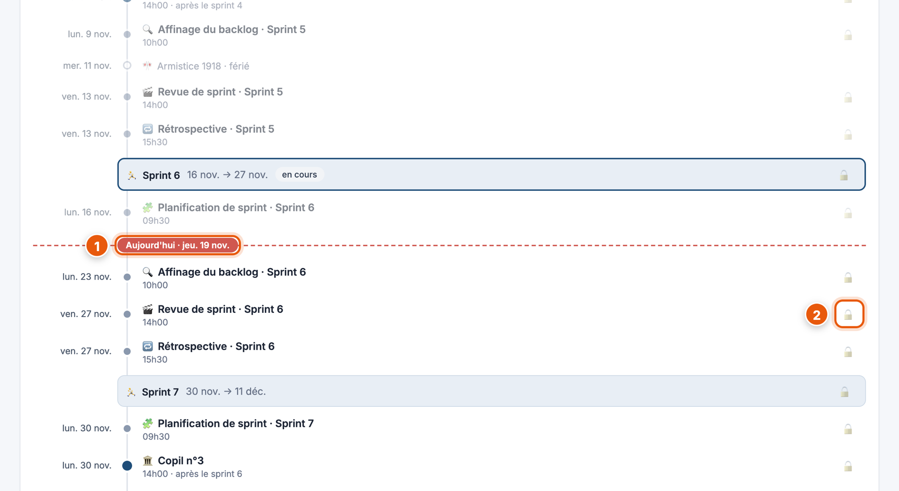
- 1La ligne rouge Aujourd'hui. Le bouton « ⤓ Aujourd'hui » y ramène.
- 2Le cadenas. 🔒 : la date est verrouillée, « Recalculer » ne la touchera pas. 🔓 : la date suit le calcul automatique. Cliquez dessus pour changer.
La frise copil (pour vos présentations)
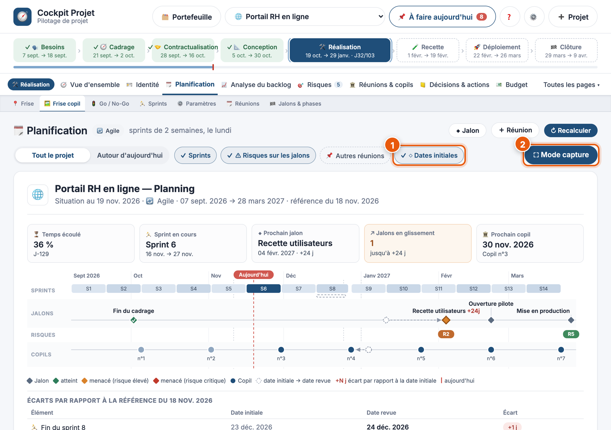
- 1◇ Dates initiales : montre en pointillés où étaient prévus les jalons au départ, avec une flèche vers la date revue.
- 2⛶ Mode capture : masque les boutons pour une capture d'écran propre. Échap pour revenir.
Couleur des jalons : gris = normal, vert = atteint, orange ou rouge = menacé par un risque élevé ou critique (à cocher dans la fiche du jalon).
Suivre les glissements
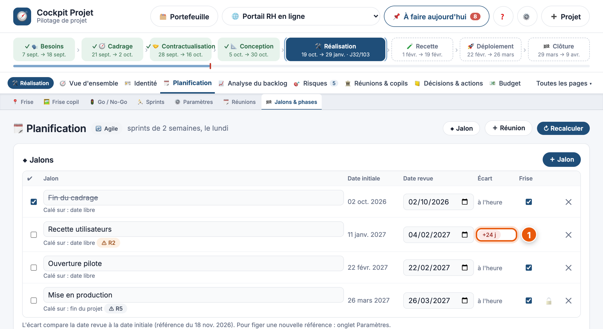
- 1L'écart entre la date initiale et la date revue (ici +24 jours : un premier glissement de 14 jours, puis 10 jours décidés lors d’une demande de changement). « à l'heure » si rien n'a bougé.
Décider du Go / No-Go de mise en production
Planification › sous-onglet 🚦 Go / No-Go : une liste de critères à vérifier avant la mise en production, et une décision tracée.
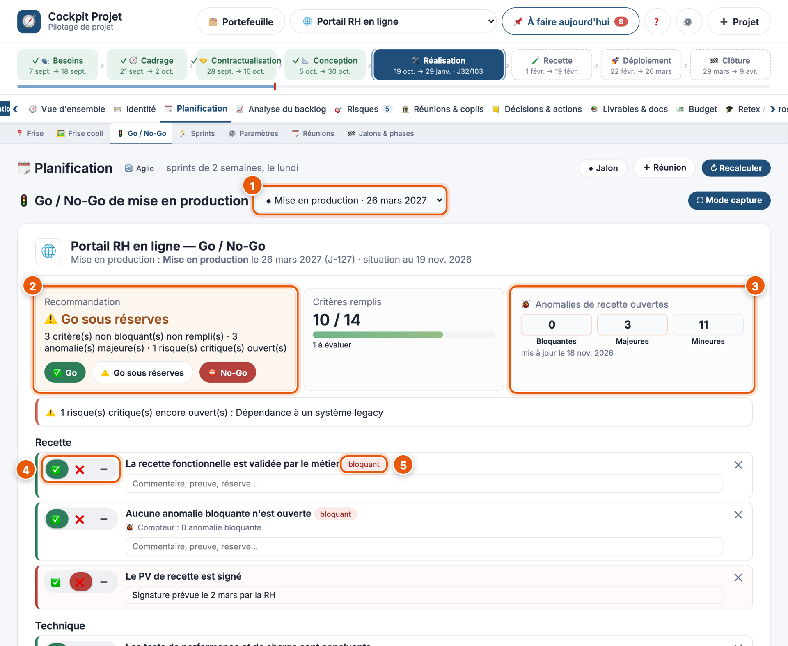
- 1Le jalon de mise en production concerné (trouvé automatiquement, modifiable).
- 2La recommandation calculée par l'outil, puis les boutons de décision ✅ Go, ⚠️ Go sous réserves, ⛔ No-Go.
- 3Les anomalies de recette encore ouvertes (bloquantes, majeures, mineures), à reporter depuis votre outil de recette.
- 4Chaque critère : ✅ rempli, ❌ non rempli, ➖ sans objet. Ajoutez un commentaire ou une preuve.
- 5Un critère bloquant non rempli, ou une anomalie bloquante, entraîne une recommandation de No-Go.
- Quelques semaines avant la mise en production, évaluez les critères (recette, technique, exploitation et support, utilisateurs, organisation). Ajoutez les vôtres en bas de page.
- En réunion de décision, cliquez sur le verdict. La décision part dans le journal des décisions ; pour un « Go sous réserves », une action peut être créée pour chaque réserve.
- Dix jours avant la date, un rappel « Préparer le Go / No-Go » apparaît dans À faire aujourd'hui. Une diapo « Go / No-Go » s'ajoute au copil.
Suivre les objectifs dans le Go / No-Go
En haut des critères, la section 🎯 Objectifs du projet reprend les objectifs mesurables de la fiche d'identité. Pour chacun : la cible, la mesure actuelle et l'état (✅ atteint, 🟡 en bonne voie, ❌ non atteint). Mettez-les à jour avant la décision, puis au bilan de clôture.
L'avancement réel (option)
Le temps écoulé ne dit pas si le travail avance. Activez l'option 📊 Avancement réel (sur la frise copil ou dans Jalons & phases, comme « Dates initiales ») :
- Dans Jalons & phases, saisissez le % réalisé de chaque phase. Une petite barre le compare au % prévu à la date du jour (trait rouge).
- Sur la frise copil, chaque phase se remplit de son % réalisé (vert, ou orange en cas de retard), et une tuile indique l'avancement réel global, le prévu et l'écart (« 9 pts de retard »).
- Projet agile sans phases : l'avancement réel est celui du backlog importé.
Les tâches de préparation automatiques
Planification › sous-onglet ✅ Tâches de préparation.
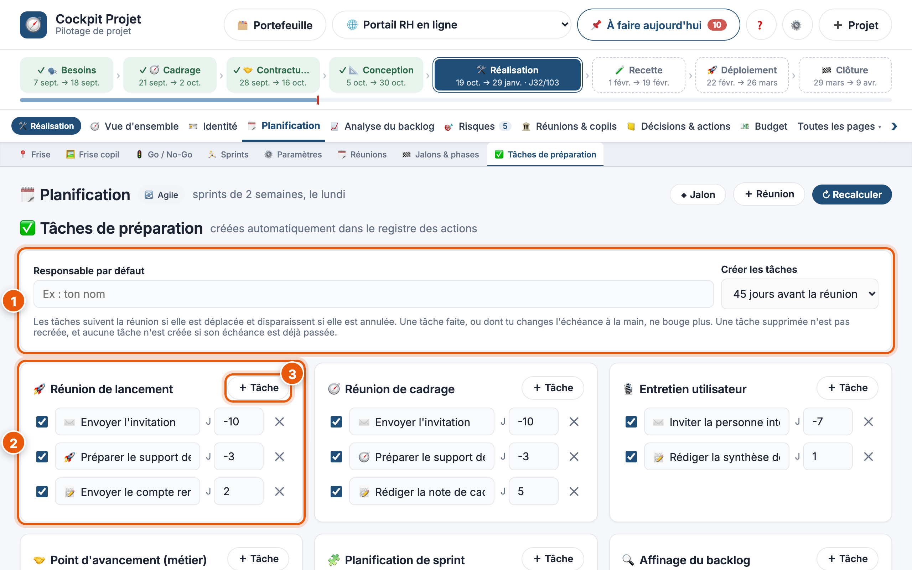
- 1Le responsable par défaut des tâches, et combien de jours avant la réunion elles sont créées.
- 2Une carte par type de réunion : ses tâches types, avec leur décalage en jours (J-10, J+2…). Décochez une tâche pour ne plus la créer.
- 3＋ Tâche : ajoute une tâche type.
Pour chaque type de réunion, définissez des tâches types avec un décalage en jours (ex. copil : envoyer l'invitation à J-10, préparer le support à J-5, envoyer le compte rendu à J+2). Elles sont créées toutes seules dans le registre des actions et suivent la réunion si elle est déplacée.
Risques
Identifier, évaluer et traiter les risques du projet, à partir d'un catalogue de risques types.
1. Choisir les risques dans le catalogue
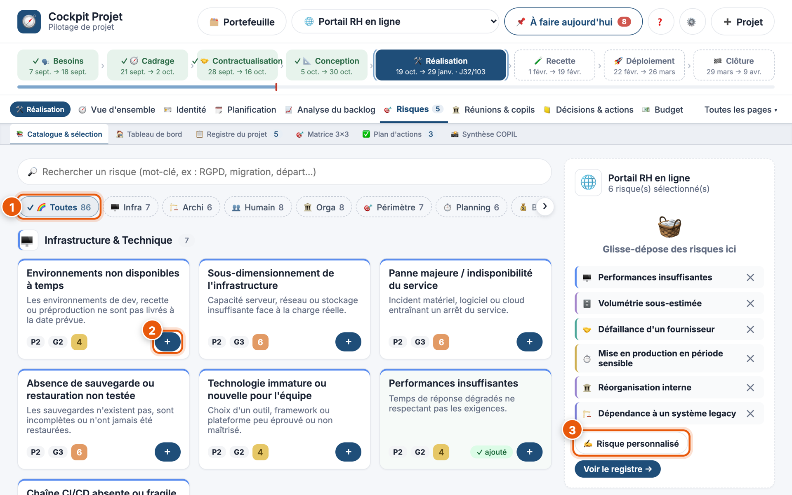
- 1Filtrez le catalogue par catégorie (infrastructure, humain, planning…) ou cherchez un mot-clé.
- 2＋ ajoute le risque à votre projet, avec une probabilité et une gravité suggérées.
- 3Risque personnalisé : pour un risque qui n'est pas dans le catalogue.
2. Décrire et traiter un risque
Dans le Registre du projet, cliquez sur un risque pour ouvrir sa fiche.
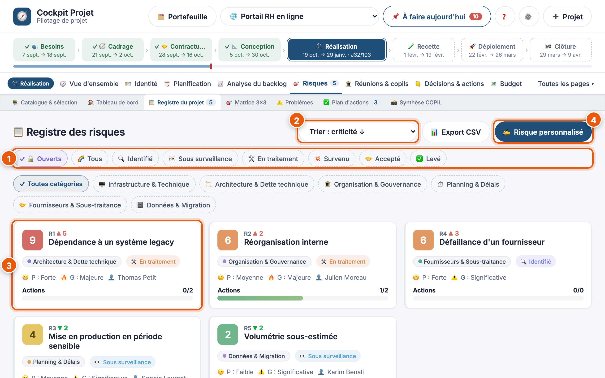
- 1Les filtres : ouverts, tous, par statut ; en dessous, par catégorie.
- 2Le tri : criticité, catégorie, numéro, avancement des actions.
- 3Une carte par risque : criticité, numéro, tendance ▲▼, avancement des actions. Cliquez pour ouvrir la fiche.
- 4Risque personnalisé, pour un risque hors catalogue (et l'export CSV).
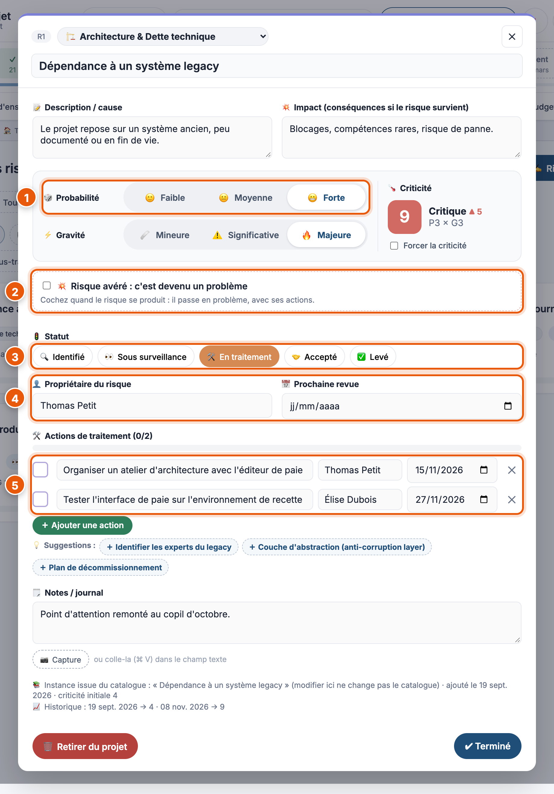
- 1La probabilité et la gravité : la criticité se calcule toute seule.
- 2💥 Risque avéré : cochez si le risque se produit, il devient un problème (voir plus bas).
- 3Le statut : Identifié, Sous surveillance, En traitement, Accepté, Levé.
- 4Le propriétaire et la date de prochaine revue (elle apparaîtra dans « À faire aujourd'hui »).
- 5Les actions de traitement, avec un responsable et une échéance. Des suggestions sont proposées. Ces actions apparaissent aussi dans le registre des actions.
3. Suivre
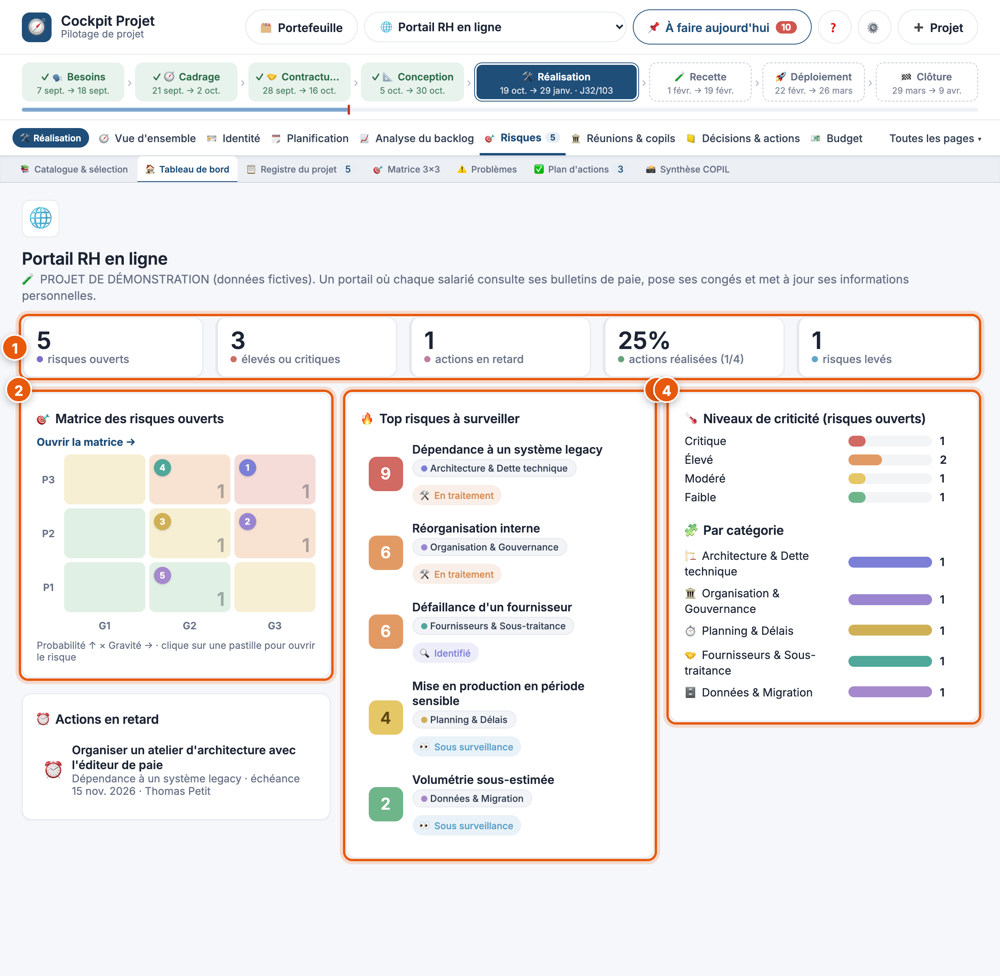
- 1Tableau de bord, les chiffres clés : risques ouverts, élevés ou critiques, actions en retard…
- 2La matrice des risques ouverts.
- 3Les risques à surveiller en priorité.
- 4La répartition par niveau et par catégorie.
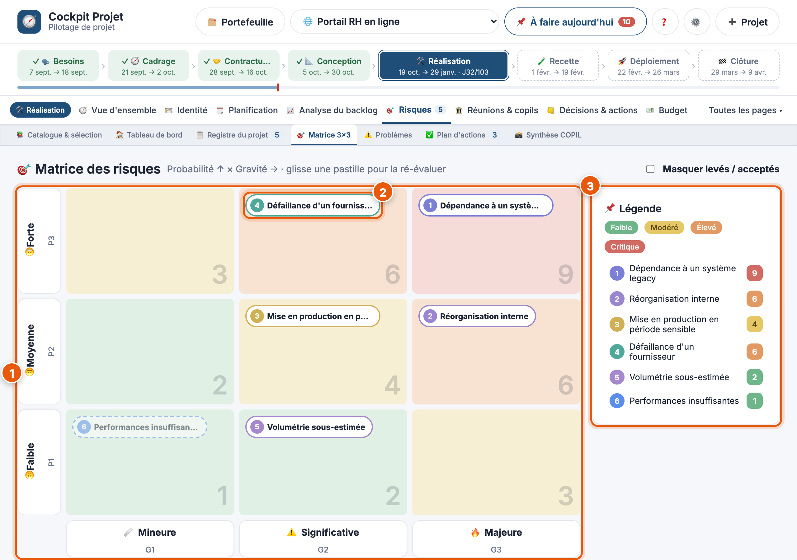
- 1Matrice 3×3 : probabilité ↑ × gravité → ; la couleur de la case donne le niveau.
- 2Une pastille = un risque : glissez-la dans une autre case pour le réévaluer, cliquez pour ouvrir sa fiche.
- 3La légende des risques présents.
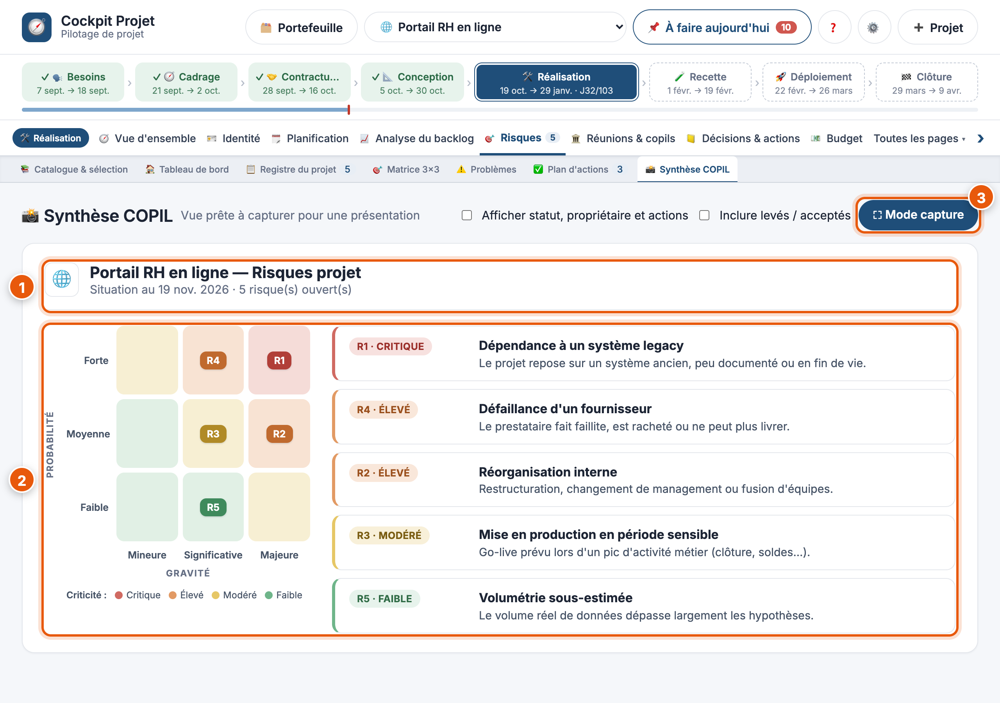
- 1L'en-tête : le projet et la date de la situation.
- 2La matrice et la liste des risques à présenter.
- 3⛶ Mode capture : une page propre, prête pour votre support de copil.
Le Plan d'actions regroupe toutes les actions de traitement.
Quand un risque se produit : les problèmes
- Ouvrez le risque et cochez 💥 Risque avéré : c'est devenu un problème. Il sort de la matrice et du registre des risques, et passe dans le sous-onglet ⚠️ Problèmes, daté du jour. Ses actions deviennent le plan de résolution.
- Un problème que personne n'avait prévu : ＋ Problème.
- Quand c'est réglé, cochez ✅ Problème résolu dans sa fiche. Les problèmes résolus restent visibles, avec la durée moyenne de résolution.
Réunions & copils
Toutes vos réunions au même endroit : les préparer, les présenter, puis en rédiger le compte rendu. Trois sous-onglets : Réunions & comptes rendus, Préparer le copil, Diapos copil. Les tâches de préparation automatiques se règlent dans Planification.
La liste des réunions
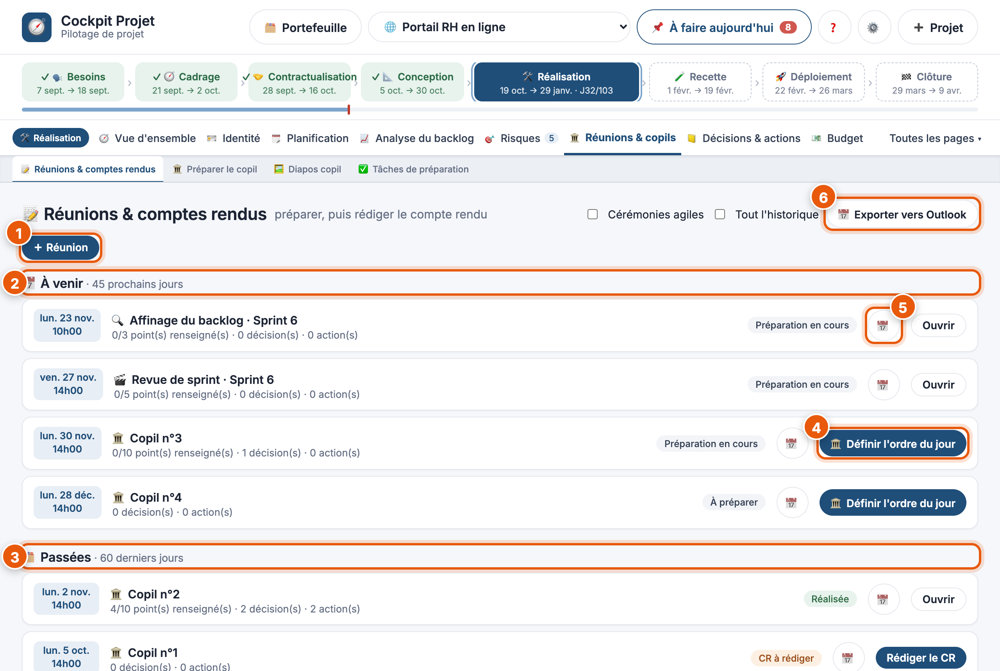
- 1＋ Réunion : ajoute une réunion qui n'était pas au planning (passée ou à venir).
- 2À venir (45 prochains jours) : bouton Préparer.
- 3Passées (60 derniers jours, ou « Tout l'historique ») : bouton Rédiger le CR.
- 4Sur un copil à venir, un seul bouton : 🏛️ Définir l'ordre du jour, qui ouvre la préparation du copil (météo, faits marquants, décisions attendues, diapos). La fiche de la réunion (participants, points abordés, compte rendu) s'ouvre en cliquant sur la carte, ou par « 📝 Ordre du jour & compte rendu » depuis la préparation.
- 5📅 télécharge l'invitation .ics de la réunion : double-cliquez sur le fichier pour l'ouvrir dans Outlook, puis envoyez-la. L'appli n'envoie rien elle-même.
- 6Exporter vers Outlook : les invitations de plusieurs réunions en une fois.
Chaque réunion a un ordre du jour proposé selon son type (copil, revue de sprint, rétrospective…), nourri par les risques, le planning et la fiche d'identité. Les participants sont proposés par défaut et modifiables.
Préparer un copil
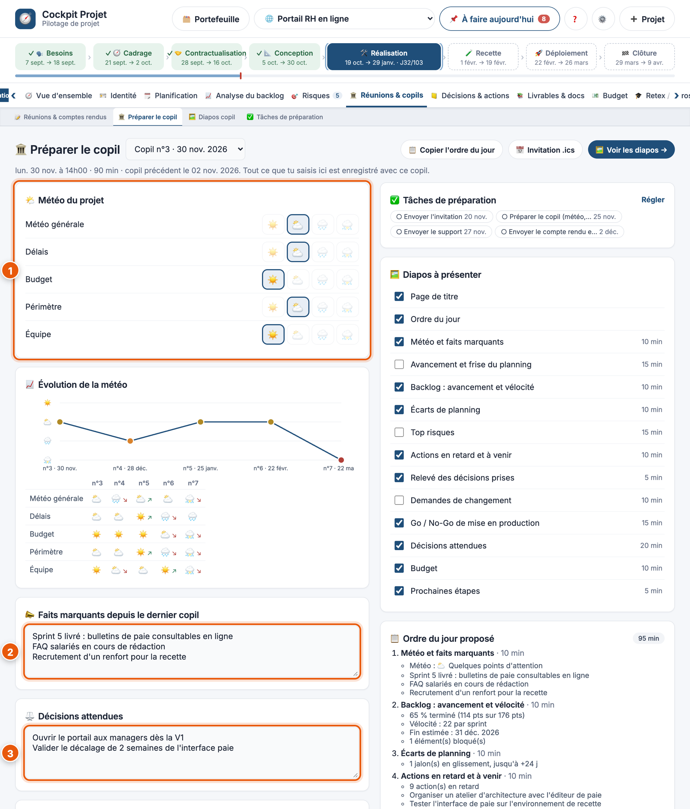
- 1La météo du projet sur 5 axes. Elle est conservée d'un copil à l'autre (courbe « Évolution de la météo »).
- 2Les faits marquants depuis le dernier copil (un par ligne).
- 3Les décisions attendues : après le copil, l'appli vous proposera de les enregistrer (validée, refusée, reportée).
À droite : les tâches de préparation de ce copil et la liste des diapos à présenter (cochez celles à garder).
Présenter les diapos
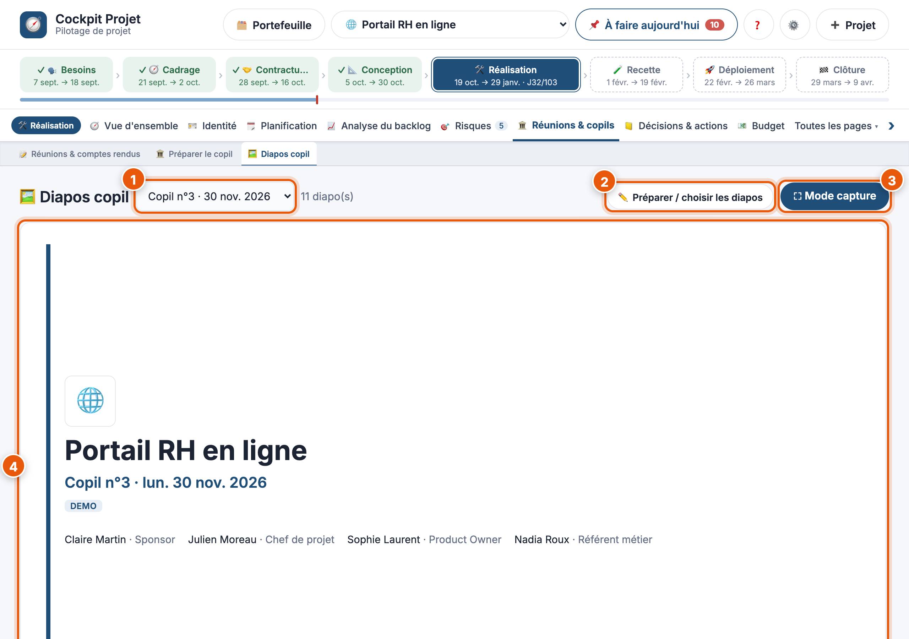
- 1Le copil dont on affiche les diapos.
- 2Préparer / choisir les diapos : revenir à la préparation du copil.
- 3⛶ Mode capture : une diapo à la fois, en plein écran.
- 4Chaque diapo est construite avec les données du projet.
- Ouvrez Diapos copil : chaque diapo est construite avec les données du projet (frise, risques, actions, décisions, budget, backlog…).
- Cliquez sur ⛶ Mode capture : une diapo à la fois, en plein écran. Passez de l'une à l'autre avec les flèches ← →.
- Faites une capture de chaque diapo (⌘ Cmd + Maj + 4 sur Mac, Windows + Maj + S sous Windows) et collez-la dans votre présentation.
Comptes rendus
Dans Réunions & copils, cliquez sur une réunion : avant, vous la préparez ; après, vous rédigez son compte rendu au même endroit.
Rédiger un compte rendu
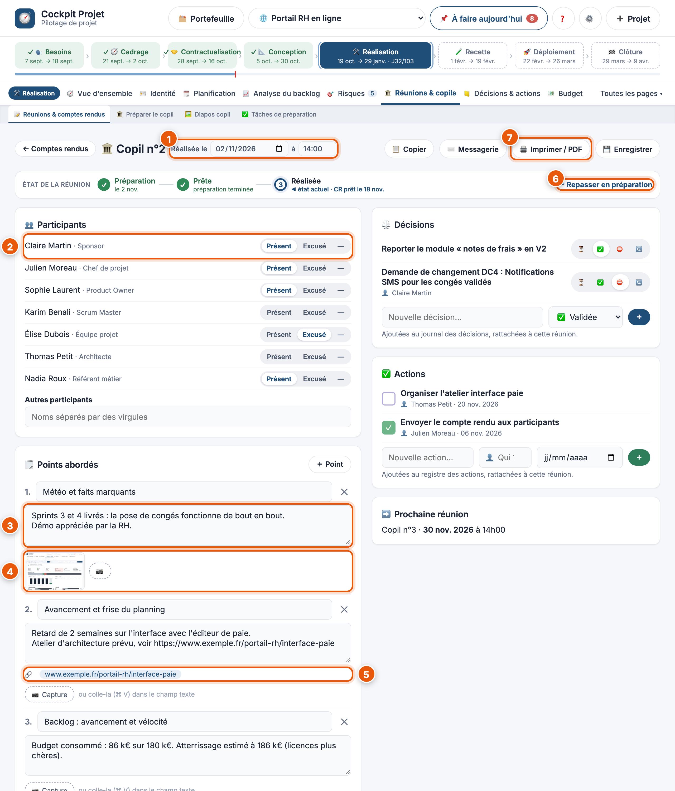
- 1La date et l'heure : changez-les pour replanifier la réunion. Le libellé passe de « Prévue le » à « Réalisée le ».
- 2La présence : Présent, Excusé, ou — pour chaque interlocuteur.
- 3Les points abordés, préremplis avec l'ordre du jour, et vos notes pour chacun. « ＋ Point » en ajoute un.
- 4Des captures d'écran collées dans le point (voir astuces).
- 5Les liens web écrits dans le texte deviennent cliquables.
- 6La barre État de la réunion : ① préparation, ② prête, ③ réalisée. Ici la réunion est réalisée ; avant, un bouton « ✓ Réunion faite, CR prêt : marquer comme réalisée » apparaît à droite. « ↩︎ Repasser en préparation » revient en arrière.
- 7Copier, Messagerie ou Imprimer / PDF pour diffuser le compte rendu. Le PDF contient aussi les captures d'écran.
À droite, les décisions et les actions saisies ici sont enregistrées directement dans le journal des décisions et le registre des actions, rattachées à cette réunion.
Décisions & actions
Un registre unique de toutes les actions (réunions, décisions, risques, libres) et le journal des décisions.
Le registre des actions
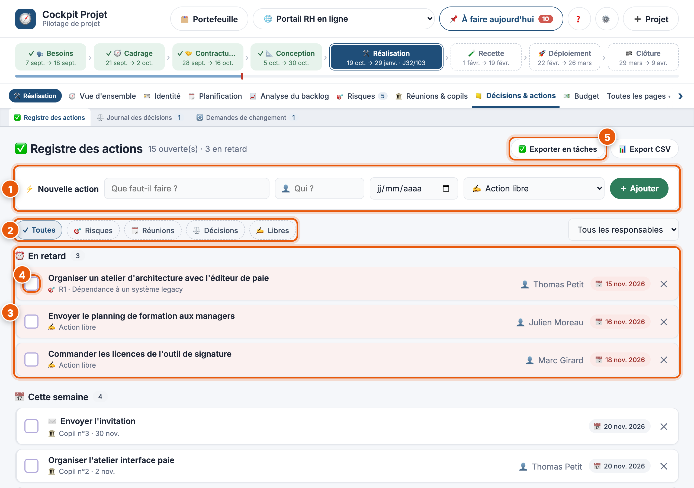
- 1Ajouter une action : texte, responsable, échéance, origine, puis ＋ Ajouter.
- 2Les filtres : par origine (risques, réunions, décisions, libres) et par responsable.
- 3Les actions sont rangées En retard (en rouge), Cette semaine, Plus tard, Sans échéance, Terminées.
- 4Cochez la case pour clore une action ; cliquez sur son texte pour la modifier.
- 5✅ Exporter en tâches (Outlook, Rappels…) et 📊 Export CSV.
Le journal des décisions
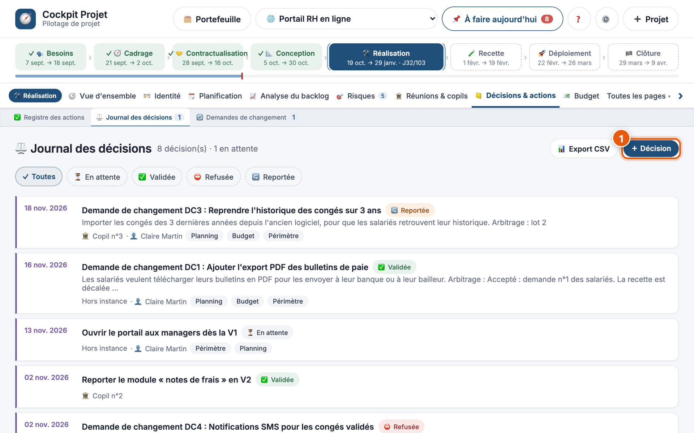
- 1＋ Décision : enregistre une nouvelle décision.
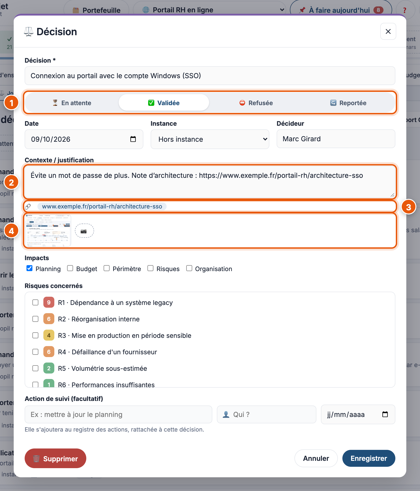
- 1Le statut : ⏳ En attente, ✅ Validée, ⛔ Refusée, ↪️ Reportée.
- 2Le contexte / justification.
- 3Les liens du texte, cliquables juste en dessous.
- 4Les captures d'écran jointes.
Indiquez aussi l'instance (le copil où elle a été prise), le décideur, les impacts et les risques concernés. Une action de suivi peut être créée en même temps.
Les demandes de changement
Dès qu'on vous demande d'ajouter, de retirer ou de décaler quelque chose, enregistrez-le dans le sous-onglet 🔄 Demandes de changement : c'est votre meilleure protection contre la dérive du périmètre.
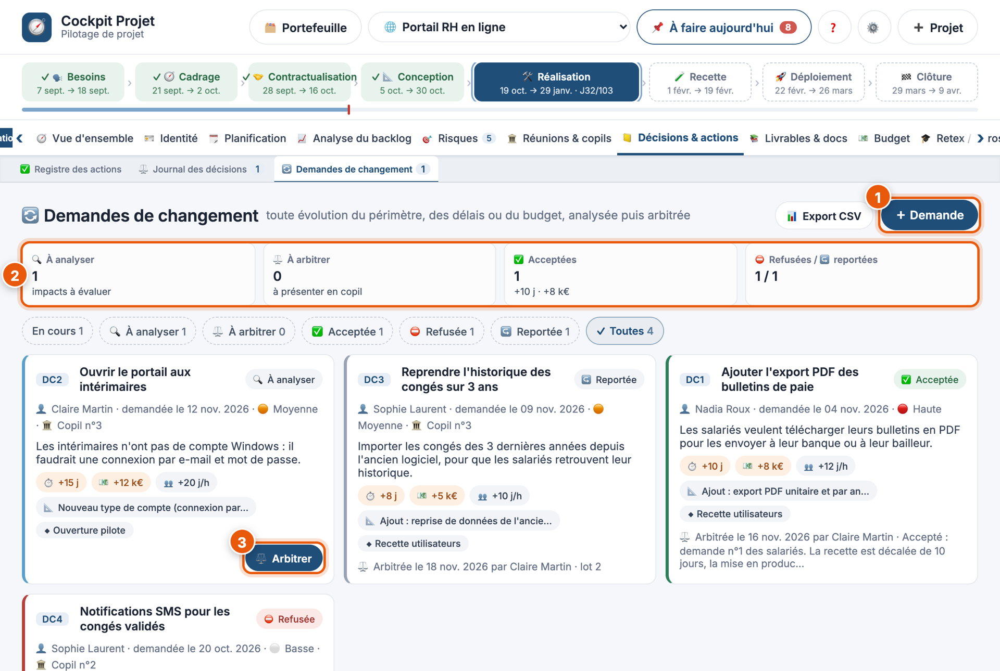
- 1＋ Demande : qui demande quoi, pourquoi, et les impacts estimés (délai en jours, coût, charge, périmètre, jalons touchés).
- 2Les compteurs : à analyser, à arbitrer, acceptées (avec l'impact cumulé), refusées et reportées.
- 3⚖️ Arbitrer : accepter, refuser ou reporter la demande.
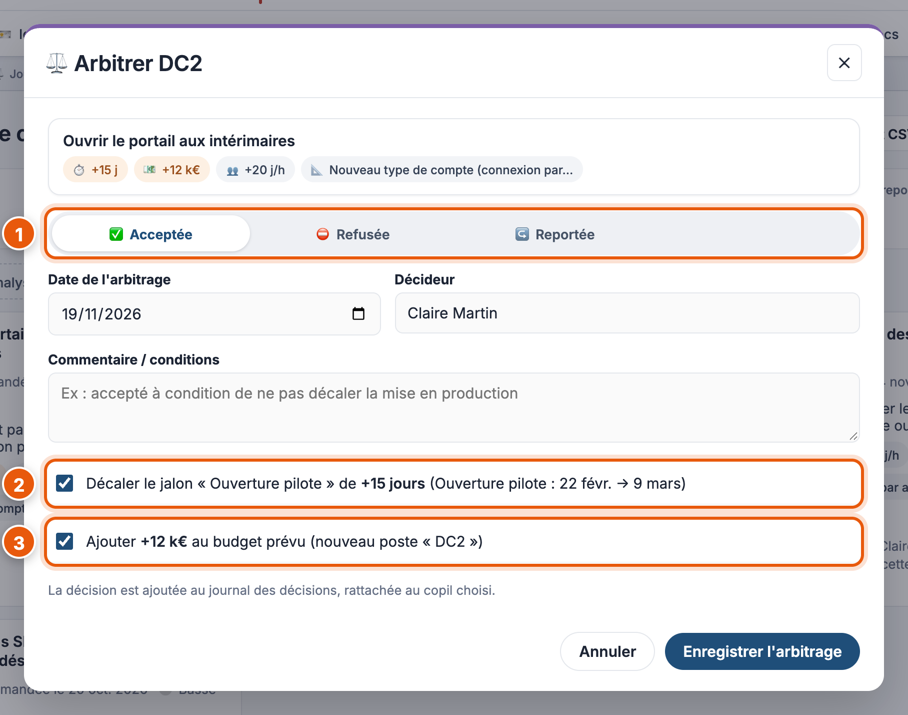
- 1La décision : Acceptée, Refusée ou Reportée. Elle est ajoutée au journal des décisions.
- 2Si elle est acceptée : les jalons impactés peuvent être décalés automatiquement.
- 3… et le surcoût ajouté au budget (nouveau poste à son nom).
Mettre les actions dans votre liste de tâches
Dans le registre des actions, ✅ Exporter en tâches crée un fichier avec les actions ouvertes (toutes, celles d'une personne, ou celles des 30 prochains jours) :
- 📧 Outlook (Windows) : un fichier CSV. Dans Outlook : Fichier › Ouvrir et exporter › Importer/Exporter › « Importer à partir d'un autre programme ou fichier » › Valeurs séparées par des virgules, puis choisissez le dossier Tâches.
- 🍎 Rappels, Thunderbird, autres : un fichier de tâches .ics, à ouvrir d'un double-clic.
Livrables & docs
La liste de tous les documents du projet, de la note de cadrage au manuel utilisateur, et une bibliothèque de modèles pour les rédiger. Deux sous-onglets : 📚 Livrables et 🧩 Templates.
Suivre les livrables
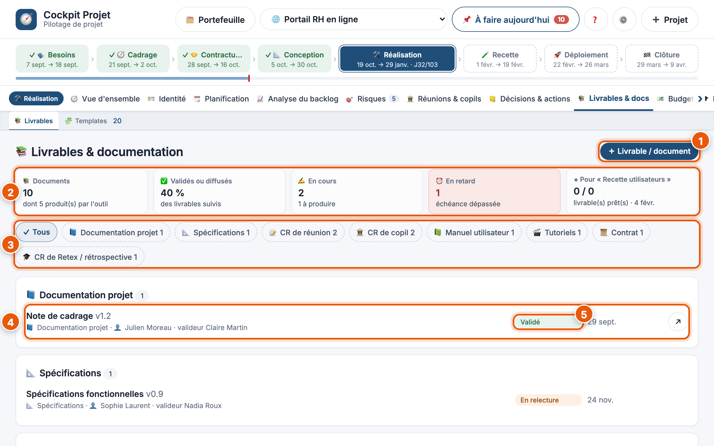
- 1＋ Livrable / document : ajoute un document à suivre.
- 2Les chiffres clés : documents, validés ou diffusés, en cours, en retard, prêts pour le prochain jalon.
- 3Le filtre par catégorie.
- 4Une ligne par document : cliquez pour le modifier ; ↗ ouvre le lien, 📎 le fichier joint.
- 5Son statut : À produire, En rédaction, En relecture, Validé, Diffusé.
- ＋ Livrable / document : titre, catégorie (documentation, spécifications, manuel, tutoriel, how-to support, contrat, NDA…), responsable, valideur, échéance, version.
- Suivez son statut : À produire → En rédaction → En relecture → Validé → Diffusé.
- Ajoutez un lien (SharePoint, Confluence, Teams, ClickUp…) ou joignez un fichier : il est copié dans le dossier
documents/.
Partir d'un template
Le sous-onglet 🧩 Templates propose 17 modèles de documents, classés par phase du projet. Ils sont préremplis avec ce que l'appli sait déjà : nom du projet, équipe, objectifs, périmètre, jalons, principaux risques, enseignements du retex.
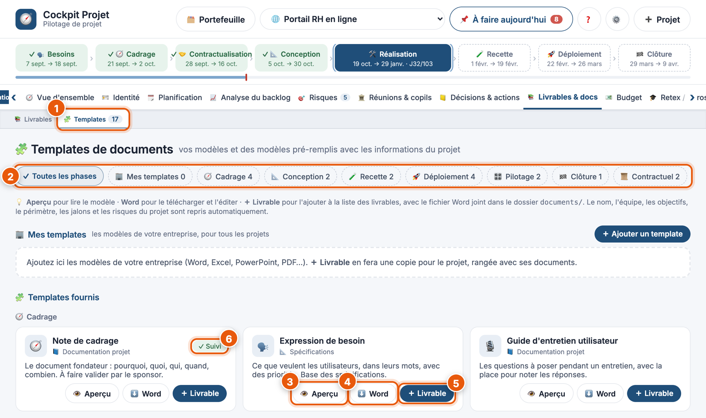
- 1Le sous-onglet 🧩 Templates.
- 2Filtrez par phase : cadrage, conception, recette, déploiement, pilotage, clôture, contractuel.
- 3Aperçu : lisez le modèle avant de l'utiliser.
- 4Word : téléchargez-le pour le compléter dans Word.
- 5＋ Livrable : ajoute le document à la liste des livrables (statut « En rédaction », version 0.1), avec le fichier Word joint dans
documents/. - 6✓ Suivi : un livrable de ce nom existe déjà dans la liste.
| Phase | Templates |
|---|---|
| 🧭 Cadrage | Note de cadrage · Expression de besoin · Guide d'entretien utilisateur · Matrice RACI |
| 📐 Conception | Spécifications fonctionnelles · User story |
| 🧪 Recette | Plan et cahier de recette · PV de recette |
| 🚀 Déploiement | Plan de conduite du changement · Plan de mise en production · Manuel utilisateur · Fiche How-to support |
| 🎛️ Pilotage | Compte rendu de réunion · Demande de changement |
| 🏁 Clôture | Bilan et PV de clôture |
| 📜 Contractuel | Grille d'analyse des offres · Accord de confidentialité (NDA) |
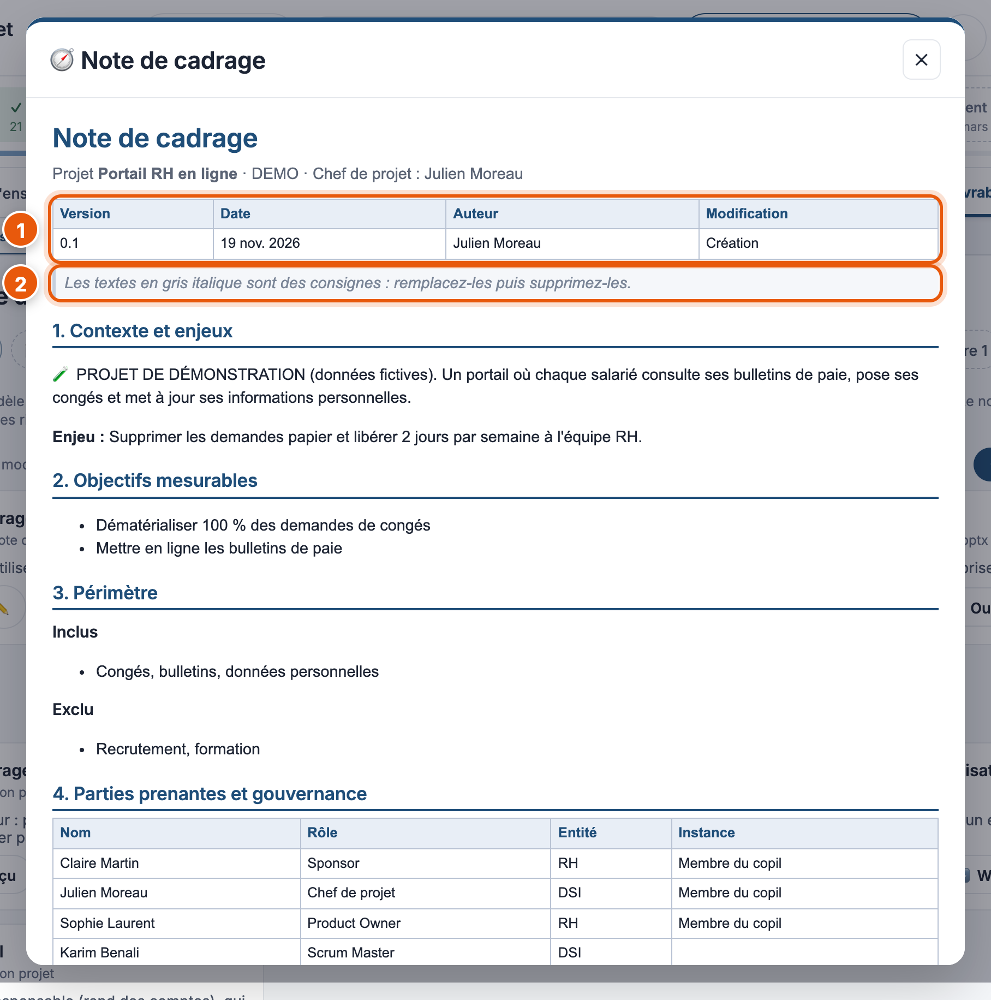
- 1Chaque document commence par un tableau de versions.
- 2Les textes en gris italique sont des consignes : remplacez-les par votre contenu, puis supprimez-les.
Ajouter vos propres templates
Votre entreprise a ses propres modèles (charte, trame de copil, tableur de budget…) ? Ajoutez-les une fois : ils seront disponibles dans tous les projets, en tête de la page, sous « 🏢 Mes templates ».
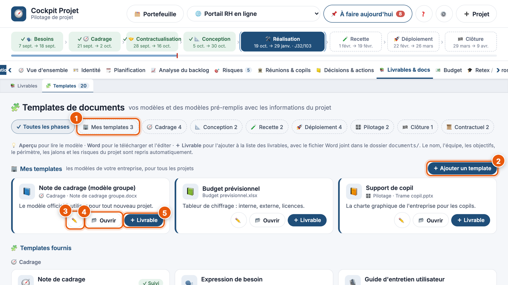
- 1Le filtre 🏢 Mes templates n'affiche que vos modèles.
- 2＋ Ajouter un template : choisissez le fichier (Word, Excel, PowerPoint, PDF…).
- 3✏️ : modifier le nom, la phase, la description, remplacer le fichier, ou retirer le template.
- 4📂 Ouvrir : ouvre ou télécharge le modèle.
- 5＋ Livrable : crée le livrable dans le projet, avec une copie du fichier rangée dans ses documents. Le modèle d'origine reste intact.
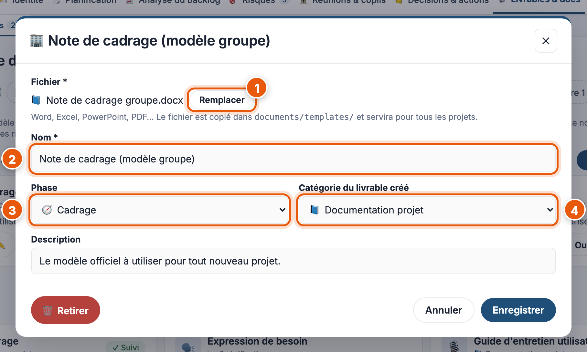
- 1Le fichier : il est copié dans
documents/templates/. - 2Le nom : proposé à partir du nom du fichier, modifiable.
- 3La phase du projet (facultative) : le template apparaît aussi quand on filtre sur cette phase.
- 4La catégorie donnée au livrable créé à partir de ce template.
Intégrer les valeurs du projet dans vos templates (balises)
Dans votre modèle Word, Excel ou PowerPoint (ou un fichier texte), écrivez des balises entre doubles accolades là où vous voulez une valeur du projet, par exemple :
- Le petit bouton i, à côté de « 🏢 Mes templates », liste toutes les balises, avec leur valeur pour le projet ouvert. 📋 copie une balise : collez-la dans votre modèle.
- Ajoutez le modèle : sa carte indique le nombre de balises trouvées (🏷️), et signale une balise inconnue (⚠️).
- ⬇️ Rempli télécharge une copie où chaque balise est remplacée par la valeur du projet ; ＋ Livrable range cette copie remplie dans les documents du projet. Votre modèle d'origine ne change pas.
| Balises | Valeur |
|---|---|
{{projet}} {{code}} | nom et code du projet |
{{chef_de_projet}} {{sponsor}} {{product_owner}} | personnes, selon leur rôle dans la fiche d'identité |
{{date_debut}} {{date_fin}} {{date_du_jour}} | dates |
{{description}} {{enjeu}} | textes de la fiche d'identité |
{{objectifs}} {{perimetre_inclus}} {{perimetre_exclu}} | listes : une ligne par élément dans Word, des puces « • » dans Excel et PowerPoint |
{{budget}} {{methode}} {{etape}} | budget, méthode, étape en cours |
{{prochain_jalon}} {{mise_en_production}} | prochain jalon (et sa date), date de mise en production |
Analyse du backlog
Votre backlog reste dans Jira ou ClickUp. Ici, vous importez un export pour obtenir un tableau de bord.
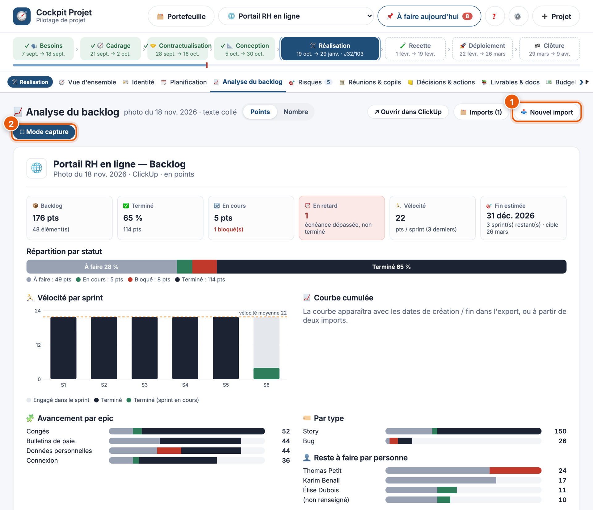
- 1Nouvel import : chargez le fichier CSV exporté de Jira ou ClickUp (ou collez son contenu).
- 2Mode capture : pour mettre le tableau de bord dans votre support.
- Dans Jira ou ClickUp, exportez votre backlog en CSV.
- Ici, 📥 Nouvel import : l'appli reconnaît les colonnes (statut, sprint, points, responsable, epic, échéance…). Corrigez-les si besoin : vos choix sont mémorisés.
- Validez. Vous obtenez : avancement, répartition par statut, vélocité par sprint, date de fin estimée comparée au jalon de mise en production, avancement par epic, reste à faire par personne, éléments bloqués ou en retard.
Budget
Module optionnel : à activer dans la fiche d'identité (Modules optionnels › Suivre le budget).
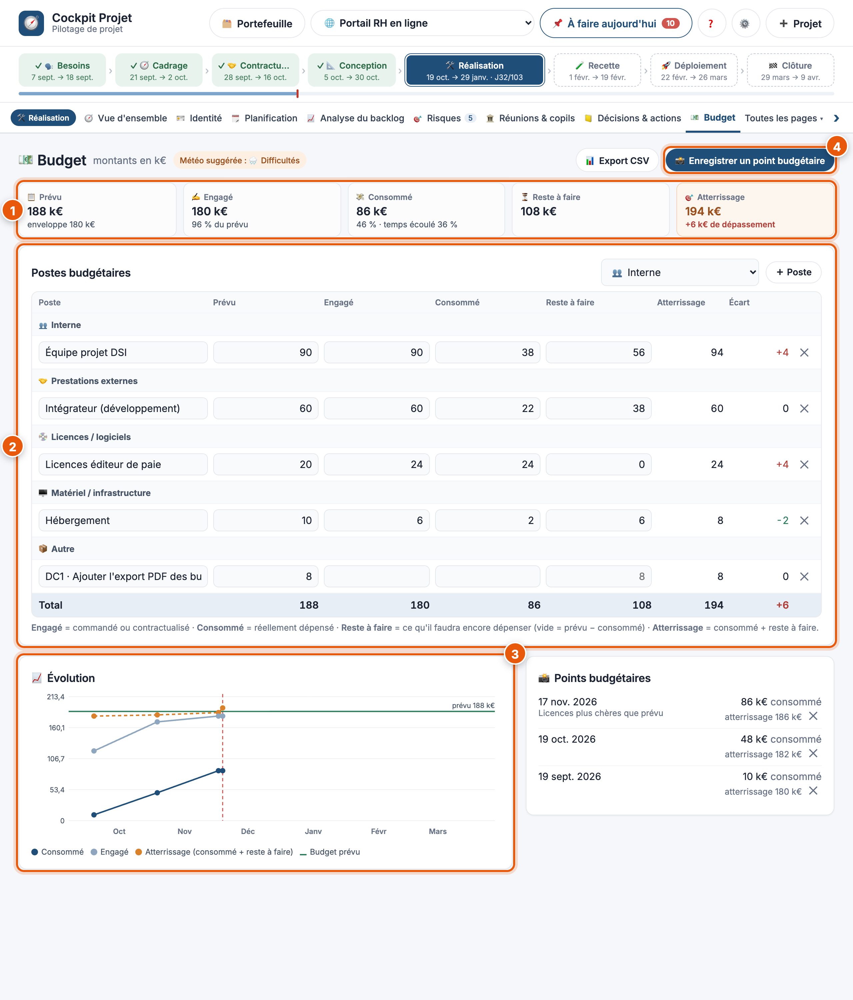
- 1Les chiffres clés : prévu, engagé, consommé, atterrissage et écart.
- 2Les postes budgétaires, par catégorie.
- 3L'évolution, point après point.
- 4📸 Enregistrer un point budgétaire.
- Ajoutez vos postes par catégorie (interne, prestations externes, licences, matériel…) avec Prévu, Engagé et Consommé.
- Le reste à faire est calculé (modifiable), ainsi que l'atterrissage et l'écart par rapport au prévu.
- De temps en temps, cliquez sur Enregistrer un point budgétaire : l'évolution s'affiche en courbe.
Retex / rétrospective
Ce qui a bien marché, ce qui est à améliorer : par sprint ou pour tout le projet.
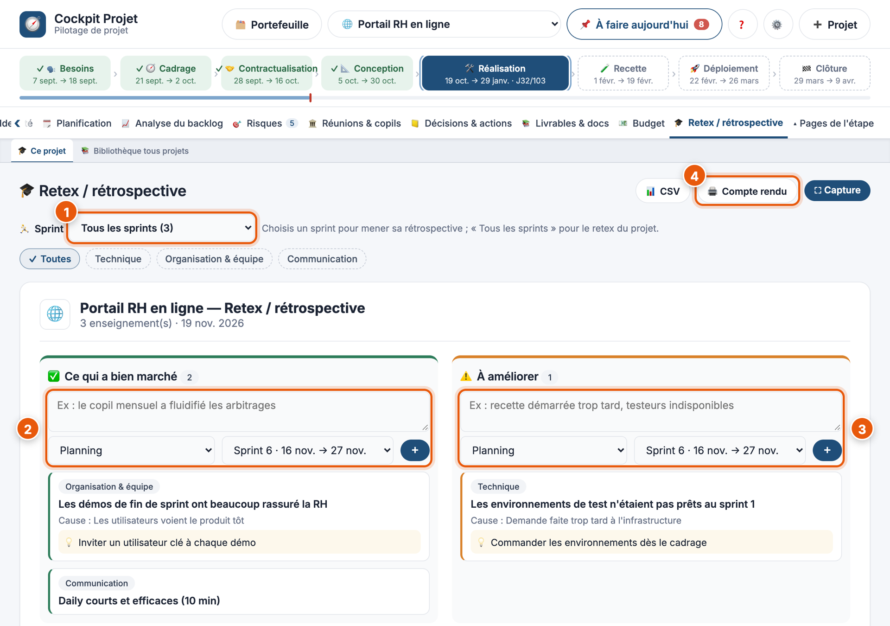
- 1Le filtre 🏃 Sprint : choisissez un sprint pour mener sa rétrospective, ou « Tous les sprints » pour le retex du projet.
- 2Ce qui a bien marché : tapez le constat, choisissez la catégorie et le sprint, puis ＋.
- 3À améliorer : même principe.
- 4Compte rendu : un CR imprimable du sprint choisi ou de tout le projet.
Cliquez sur une carte pour ajouter la cause, la recommandation pour les prochains projets ou des captures, ou pour en faire une action. Le sous-onglet 📚 Bibliothèque tous projets rassemble les enseignements partagés de tous vos projets : idéal avant de lancer un nouveau projet.
À faire aujourd'hui
Votre liste du matin, tous projets confondus. Le bouton est en haut de l'écran, avec un badge rouge.
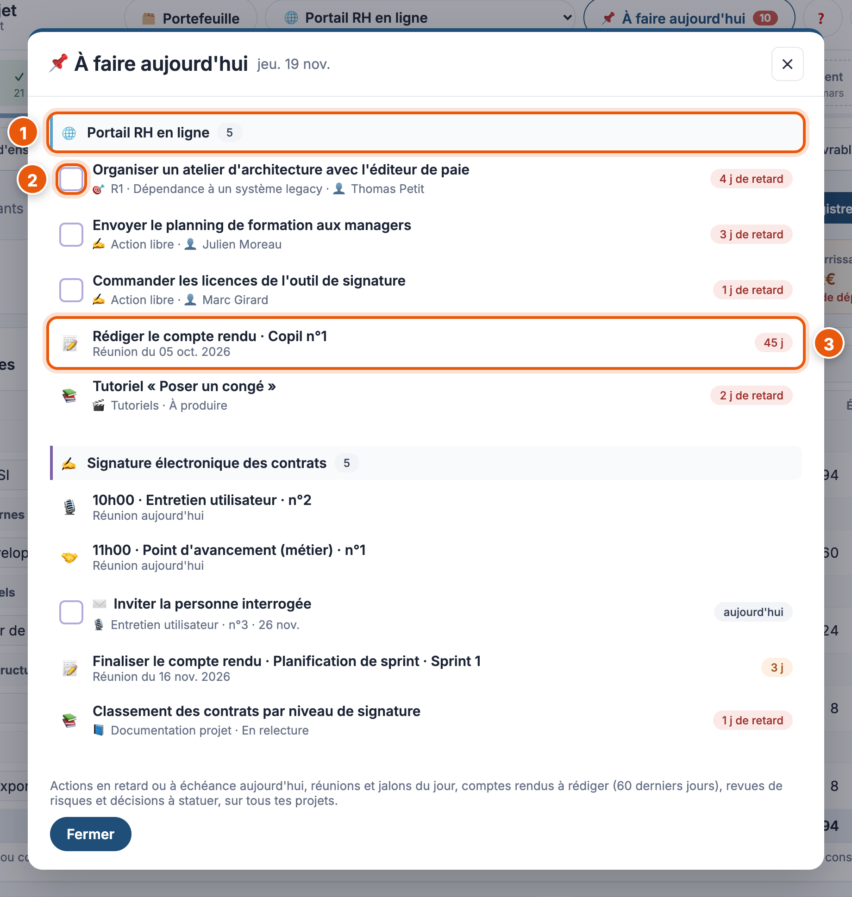
- 1Les éléments sont regroupés par projet, avec leur nombre.
- 2Cochez la case pour clore une action directement.
- 3Cliquez sur une ligne pour l'ouvrir dans son projet.
On y trouve : les actions en retard ou à faire aujourd'hui, les réunions et jalons du jour, les comptes rendus à rédiger ou à finaliser (réunions des 60 derniers jours pas encore marquées « Réalisée »), les revues de risques arrivées à échéance, les copils à statuer, le rappel du flash report le vendredi et les livrables en retard.
Réglages & partage
Le bouton ⚙️ en haut à droite : ce qui concerne tous vos projets.
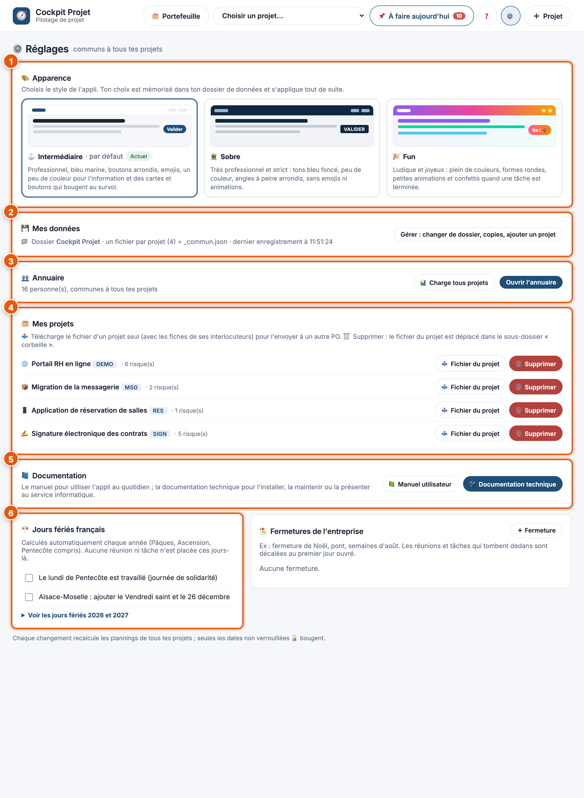
- 1🎨 Apparence.
- 2📁 Mes données.
- 3👥 Annuaire.
- 4🗂️ Mes projets.
- 5📘 Documentation.
- 6🎌 Jours fériés & fermetures. Chaque bloc est détaillé ci-dessous.
🎨 Apparence
Trois thèmes : Intermédiaire (par défaut, avec des cartes et boutons qui bougent au survol), Sobre (bleu foncé, angles à peine arrondis, sans emojis, très strict) et Fun (couleurs, animations, confettis quand vous terminez une tâche). Le choix est mémorisé.
📁 Mes données
Le dossier utilisé, la dernière sauvegarde. Changer de dossier, faire une copie de sauvegarde. « 🖥️ Utiliser le dossier de l'appli » : les mêmes données que dans Safari.
👥 Annuaire
Les personnes communes à tous vos projets : nom, fonction, entité, e-mail, disponibilité (jours par mois). Sous-onglets « Liste des personnes » et « Charge tous projets ».
🎌 Jours fériés & fermetures
Les fériés français sont automatiques. Options Alsace-Moselle et lundi de Pentecôte travaillé. Ajoutez les fermetures de l'entreprise : les plannings les évitent.
📘 Documentation
Le manuel utilisateur (aussi avec le bouton ❓ en haut) et la documentation technique, pour installer l'appli ou la présenter au service informatique.
🗂️ Mes projets
Fichier du projet : télécharge le projet pour l'envoyer à un collègue. Supprimer : le projet part dans le dossier corbeille/.
Partager un projet avec un collègue
- ⚙️ Réglages › Mes projets › Fichier du projet : un fichier
.jsonest téléchargé. - Envoyez-le (mail, Teams…).
- Votre collègue l'ouvre avec Ajouter un projet sur la page Portefeuille.
documents/ : ils ne partent pas avec le fichier du projet.Astuces & dépannage
Ajouter une capture d'écran dans un texte
Partout où vous écrivez (comptes rendus, décisions, actions, risques, livrables, retex, notes…) :
- Faites une capture dans le presse-papiers : ⌘ Cmd + Ctrl + Maj + 4 sur Mac (Windows + Maj + S sous Windows), puis sélectionnez la zone.
- Cliquez dans le champ texte, puis collez : ⌘ Cmd + V sur Mac, Ctrl + V sous Windows. La vignette apparaît sous le champ.
- Cliquez sur la vignette pour l'agrandir. La petite ✕ (au survol) la retire.
Les liens web sont cliquables
Tout texte qui commence par http://, https:// ou www. devient un lien. Dans un champ en cours de saisie, les liens s'affichent dans une barre 🔗 juste en dessous. ⌘ Cmd + clic (Ctrl + clic sous Windows) sur un lien du champ l'ouvre aussi.
Se repérer dans les onglets
Deux lignes en haut de l'écran : les onglets du projet (Vue d'ensemble, Identité, Planification…), puis, sur une bande teintée, les sous-onglets de l'onglet ouvert. Sur un écran étroit, une flèche ‹ ou › apparaît au bord : cliquez dessus pour faire défiler les onglets.
Dans les pages, les étiquettes en pointillés sont des filtres d'affichage (✓ quand ils sont actifs), les boutons bleus sont des actions.
Changer d'apparence
⚙️ Réglages › Apparence : Intermédiaire (par défaut), Sobre (bleu foncé, très strict, sans emojis) ou Fun (coloré, animé, confettis quand une tâche est terminée). Le choix est mémorisé dans votre dossier de données.
Faire une belle capture pour un support
Sur les écrans qui ont le bouton ⛶ Mode capture (fiche d'identité, frise copil, RACI, flash report, backlog, retex, synthèse risques, Go / No-Go, diapos, rapport de portefeuille), cliquez dessus : les barres et les boutons disparaissent. Faites votre capture, puis Échap pour revenir. Le bouton ✕ Quitter le mode capture, en haut à droite, se réduit après quelques secondes en une petite pastille ✕, discrète mais toujours cliquable.
En cas de souci
| Ce que vous voyez | Que faire |
|---|---|
« Error response 404 » ou « Ce site est inaccessible » sur localhost:8765 | Le petit serveur est arrêté. Double-cliquez sur Lancer Cockpit Projet.command (Mac) ou Lancer Cockpit Projet.bat (Windows). |
| « Ouverture de tes données… » reste affiché | Le navigateur ne répond pas (l'étape en cours est indiquée à côté). Au bout de 6 secondes, l'appli passe toute seule par le petit serveur, qui lit le même dossier, et s'en souvient pour les fois suivantes. Sinon : ⚙️ Réglages › Mes données › « 🖥️ Utiliser le dossier de l'appli ». |
| L'appli demande d'autoriser l'accès à votre dossier | Normal à chaque nouvelle ouverture de Chrome : cliquez sur 🔓 Autoriser l'accès. |
| L'appli ne retrouve plus le dossier (dossier renommé ou déplacé) | Cliquez sur Choisir un dossier et sélectionnez-le à son nouvel emplacement. Vos projets sont intacts. |
| Safari ou Firefox : « Le petit serveur de Cockpit Projet ne répond pas » | Lancez l'appli avec Lancer Cockpit Projet, puis rechargez la page. |
| Une nouveauté annoncée n'apparaît pas | Cliquez sur 🔄 Recharger dans le bandeau bleu, ou rechargez la page (⌘ Cmd + R sur Mac, F5 sous Windows). |
| Un projet a été supprimé par erreur | Il est dans le sous-dossier corbeille/ de votre dossier de données : ouvrez-le avec Ajouter un projet. |